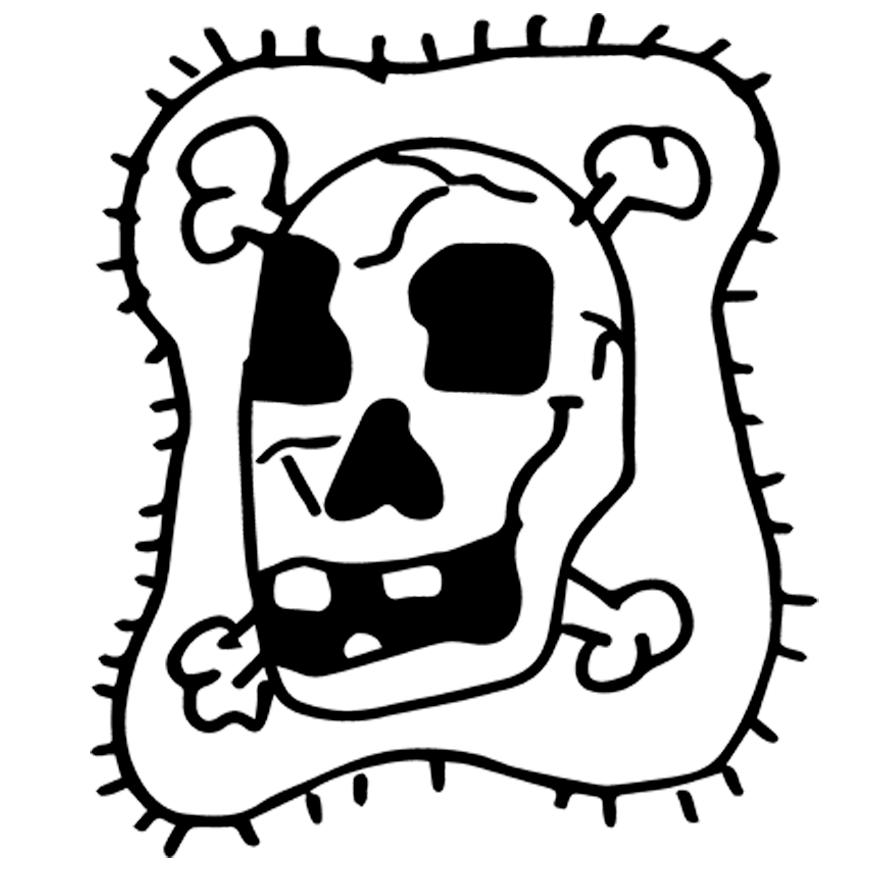

Viernes 10 de Enero 2004
Esta noche voy a hacer un recorrido sobre la melancolía. Será imposible llegar a hacerlo a la manera de Maldiney... a quien me gustaría rendir homenaje. Acaba de morir, tenía 102 años. Creo que será demasiado complicado hacer el recorrido y llegar a la manera en que Maldiney intentó acercarse lo más posible a la melancolía, especialmente a través de Binswanger. No sé si tendremos tiempo… ya veremos…
Podemos decir que la melancolía es, al mismo tiempo, la locura en el sentido psiquiátrico del término y la expresión del alma humana en su núcleo más profundo. Es una palabra, un concepto que permite -lo cual es raro- un puente entre el pensamiento actual y la tradición antigua, a partir de una pregunta universal: ¿De dónde viene la locura? ¿De dónde viene el dolor profundo, la furia, el suicidio, y hacia dónde nos lleva? En oposición a aquellos que invocaban una razón sobrenatural o un castigo divino, el pensamiento médico desde la antigüedad le dio prioridad a una causa natural. Toda la teoría de la bilis negra. No sé si debo detenerme en esto, porque requeriría muchas explicaciones sobre Platón… toda esa tradición… pero sí hablaré de lo que más me ha apasionado en este tema.
La teoría de la bilis negra es el núcleo de una aproximación pasional de la melancolía, que más tarde se transformó en una aproximación nerviosa. Lo negro, lo opresivo y la pesadez permanecen presentes como un continuo tanto en la clínica como en la literatura. Este es un curso que preparé, que sigo preparando para Louvain, y que se organiza en torno a ese eje. En una primera parte, la Antigüedad: Platón y la doctrina de la manía; Aristóteles y esa doctrina algo conocida sobre el genio...
L.F.C: ¿Genial?
M.L: Sí, genial, el hombre y el genio. Eso ya es más conocido, esa relación en la melancolía. Es un pequeño texto dentro de un gran libro de Aristóteles. Jacky Pigeaud hizo una traducción y un buen comentario en este librito: “El hombre de genio y la melancolía”.
Si esta noche nos detuviéramos en ese punto, podríamos quedarnos hasta tarde, así que pensé: “Bueno, lean a Jacky Pigeaud y ya está”, para poder pasar a este otro, este libro inmenso. Pero si quieren, podemos detenernos un poco en Platón y Aristóteles…
En 1621, al final del Renacimiento, aparece este libro en dos tomos: “La anatomía de la melancolía” de Robert Burton. Yo creo que es: “¡El libro de la vida, el libro del universo!”. Ahí me voy a detener un poco.
Y en una primera parte, también quería comentar el libro “Diálogo con el insensato” de Gladys Swain, un artículo magnífico que escribió que se llama “Permanencia y transformaciones de la melancolía”.
En la segunda parte, abordaré el pensamiento psiquiátrico en torno a la melancolía, con dos metodologías: la metodología semiológica de Kraepelin y la metodología tipológica, a partir del clásico de Tellenbach “La melancolía”. En mi curso, intento inmediatamente mostrar un encuentro entre psicoanálisis y fenomenología, por lo que leemos a Freud, a Abraham, así como también a Binswanger y su difícil libro “Melancolía y manía”. Sobre todo -y esto es realmente complicado- Binswanger releído por Maldiney. No sé hasta dónde llegaremos hoy. Mañana, seguramente, cuando veamos los perfiles, si están de acuerdo, abordaré la melancolía según Szondi.
Entonces, voy rápido, dejo de lado a Platón y Aristóteles y paso a esto. Intenten seguirme. Voy a leer la introducción de Starobinski. ¿Lo conocen? Es muy bueno. Salió hace un año, y es una recopilación de artículos: primero, sobre su tesis acerca del tratamiento de la melancolía; luego, de cuando ya era crítico literario, había dejado la psiquiatría y escribía mucho sobre Burton, Baudelaire, Joyce…
¿Qué dice Starobinski sobre “La anatomía de la melancolía”? Sencillamente, para introducirlo:
La publicación de “La anatomía de la melancolía” en Inglaterra, en 1628 -a fines del Renacimiento-, en Oxford, marca uno de los grandes hitos en el recorrido de la melancolía. Es una síntesis genial que reúne todo lo significativo que se ha dicho sobre la melancolía, a lo que se aúna la memoria de un sinnúmero de historias -legendarias, poéticas o clínicas- que esta enfermedad del alma marcó con su sombra. Nos ofrece la Summa completa del tema. Construida orgánicamente como todos los grandes tratados del Renacimiento tardío, con sus apartados, secciones, partes y artículos. El libro de Burton fue un éxito de librería en Inglaterra. El autor aumentó la obra dotándola de correcciones y agregados en cinco reediciones sucesivas. Es uno de los grandes textos de la literatura inglesa. “La anatomía de la melancolía” se presenta como el libro de un lector –¡ah! De un lector, no de un autor, empieza ahí– que ha abierto una infinidad de libros para componer el suyo, para acrecentarlo y completarlo –pertenece a la misma tradición que Montaigne, por ejemplo–. Este libro, en el que está depositada tanta memoria literaria, fue por consiguiente un libro-fuente, tesoro de la lengua para sus escritores –sobre todo los ingleses– y, sobre todo, repertorio de ejemplos en un dominio donde el ejemplo es contagioso. Se le percibe presente como subtexto siempre que, en el siglo XVIII, se habla de la English maladie. Keats –maravilloso– más tarde, lo frecuentaría; lo sabemos por las anotaciones que dejó en su ejemplar de “la anatomía”. Algunas imágenes de la admirable Oda a la melancolía son una destilación de Burton. ¡La Oda a la melancolía de John Keats! Es un poema que hay que leer. Es maravilloso.
El tratado de Burton pertenece a una época en que la lengua de la medicina no era más que una ramificación -descriptiva y especulativa- de la física, la cual a su vez era una rama de la filosofía. Ésta, por su parte, lindaba con la literatura por el diálogo (por Platón) y por la poesía (por Lucrecio). Los mismos matemáticos se acercaban a la vida y a la moral por la vía sesgada de la astrología, que Burton practicó, según parece, con asiduidad, siempre tomando en cuenta que “los astros nos inclinan, pero no obligan.
Ahí. ¿Quién es Burton? Un estudiante, un académico que vivía en Oxford. Pasó toda su vida en la universidad de Oxford, nunca salió de allí. Era bibliotecario, y se nombra a sí mismo como un estudiante eterno que lee, investiga, escribe y vive una vida muy solitaria. Él dice: "Llevo una vida de estudiante como Demócrito que vivía solo en su jardín". Así que Burton escribirá este libro bajo el seudónimo de Demócrito.
¿Quién es Demócrito? Existe Demócrito el Viejo y Demócrito el Joven. Y Burton escribe bajo el seudónimo de Demócrito el Joven. Demócrito se estableció en la soledad, apartado de la ciudad de Abdera. Se ríe indiferentemente de todo. En la segunda parte del libro hay un gran pasaje, que quizás sea el punto de encuentro entre la tradición antigua y el pensamiento actual: ¿nos reímos con un enfermo o lloramos con su sufrimiento? Los grandes locos… ¿nos hacen reír o llorar? Esa, ya era la gran pregunta en Demócrito.
Se ríe indiferentemente de todo. Sus compatriotas lo tenían por loco y, al buscar devolverle el juicio a su gran hombre, recurrieron a la ayuda a Hipócrates. Ésta es la ficción que se desarrolla a lo largo de las cartas apócrifas que nos han llegado dentro del Corpus hipocrático.
Antes de viajar a Abdera, Hipócrates da su punto de vista sobre los dos síntomas que le hicieron saber. Es seguro que reírse indiferentemente de todo, sin hacer distinción entre bien y mal, es un síntoma de locura. Hipócrates cuenta con decírselo francamente a Demócrito: "Sufres de melancolía, melancholias". Pero Hipócrates agrega: la soledad es un síntoma ambiguo. Es preciso diferenciar entre la soledad del hombre contemplativo y la del hombre atormentado por la bilis negra. Los abderitianos no son capaces de hacerlo. La apariencia exterior es la misma, los locos y los contemplativos “se alejan de los hombres, observan el aspecto de sus semejantes como si se tratara de extraños”. De antemano, Hipócrates cree que encontrará en Demócrito a un hombre transportado a una región superior por efecto de un “vigor excesivo del alma”. Siendo estas meras conjeturas, para saberlo con certeza Hipócrates está decidido a examinar al supuesto enfermo en persona. Se lo debe a un hombre excepcional como él, a una “obra de la naturaleza”. Por ello lo hará sin aceptar ninguna remuneración. Solo tiene la intención de observar, de escuchar al supuesto enfermo y así llegar al conocimiento -a la prognosis- que legitimará la decisión tocante a un eventual tratamiento, esto es, a la administración de eléboro. En una carta famosa (número 17), conocida con el nombre de "Carta a Damageto”, Hipócrates narra el encuentro entre el médico y el filósofo.
Hipócrates, quien ha venido a observar, descubre en una soledad sombría a un hombre estudioso que lee, medita, observa con detenimiento las entrañas abiertas de los animales. Demócrito le explica que diseca a los animales para encontrar dónde está la bilis negra y así comprender mejor la causa de la locura. Por ende, la soledad de Demócrito resulta perfectamente comprensible; no es la de un hombre a quien atormenta un humor corrompido, sino la de un sabio que busca las causas ocultas y que se propone encontrar, con sus propios ojos, la naturaleza y la situación (physis kai tesis) de la bilis. Con ello domina, desde la altura de un conocimiento preciso y objetivo, a aquellos que han dudado de la salud de su espíritu. Sabe que la salud y la enfermedad son asunto de una proporción humoral equilibrada. Etc. etc., etc.
Lo que es muy importante, y en particular porque estamos al final del Renacimiento, es la construcción y la estructura de la obra. Comienza con el frontispicio, como lo llamaban en la época. ¡Es enorme! Toda esta enorme obra está resumida en la portada, en el frontispicio.
¡Ahí, vean este pequeño signo! ¡El emblema de Saturno! ¿Han visto “Melancolía” de Lars Von Trier? Este libro está escrito bajo el signo de Saturno. ¿Qué era Saturno para Burton? Era el último de los planetas, un dios rechazado, que sin embargo había gobernado el siglo de oro. Es, dice Gérard de Nerval, el sol de la melancolía. Es alguien que poseía una visión inmediata del mundo superior, y que se deslizó en un pensamiento matemático-geométrico hasta la desesperación. Intentó pensar, de modo matemático-geométrico, esa visión inmediata del mundo superior. Y, al constatar que no era posible, Saturno se deslizó en la desesperación. Y ahí vive con los excluidos, los errantes, en la sequedad y en el frío.
Arriba, al medio, Demócrito el Viejo que lee un libro bajo un árbol. Abajo, en el medio, Demócrito el Joven, el seudónimo de Burton, el autor. El mayor está rodeado de animales, signo de celos y soledad. A la izquierda, el enamorado y los supersticiosos; a la derecha, el hipocondríaco y el maníaco, y debajo las plantas que curan.
En la estructura misma, el título: “Anatomía de la melancolía”. Hará alusión a la etimología de la palabra anatomía, es decir, desnudar, poner a plena luz. La locura del hombre razonable es anatomizada por el guiño de un loco. Es casi el leitmotiv de Burton, su hilo conductor.
Así que tenemos el frontispicio y luego la dedicatoria a su maestro Berkeley. Tercera cosa, hay un poema en latín dirigido a su libro, ya que él, Burton, es el lector del libro. ¡Es muy actual! Foucault no inventó nada al decir que no hay autor. Uno solo escribe lo que ha leído. Así que, él es lector. Burton, en toda su genialidad, agradecerá, en un poema, a su libro. Luego, tenemos un resumen de la melancolía en forma de diálogo. Y luego, tenemos lo que se hizo célebre, y sobre lo que voy a insistir un poco: un prefacio satírico.
Después, tenemos una advertencia al lector, y sobre todo al lector que usa mal su tiempo, que se aburre, que no hace nada, que es holgazán. ¡Al lector holgazán! ¡Canalla! Durante todo el libro, no para de arremeter contra los holgazanes. Contra la gente que dice "no sé qué hacer hoy… voy a leer un libro". Los detesta. Como si leer un libro fuera un entretenimiento…
Público: Una ocupación.
M.L: ¡Pues bien! Los detesta… ¡a muerte! ¡Hay que estudiar un libro! ¡No importa cúal! Incluso un cómic. Todo el tiempo que este señor pasó escribiendo para poder condensar todo en un libro, y nosotros queremos divertirnos un poco, como si fuera… así que, realmente hay una advertencia al lector.
Y luego escribirá un poema satírico, cínico, en diez estrofas, soberbio: En alternancia, llorar y reír, Heráclito es el que llora y Demócrito es el que ríe.
Llora, pues, Heráclito, tus lágrimas convienen al tiempo.
Solo ves lo feo, solo ves lo triste.
Y tú, Demócrito, puedes reír, tienes derecho a ello.
Solo ves vanidad, solo ves locura.
Uno y otro en el llanto o la risa.
Expresan el esfuerzo, expresan el dolor.
En el presente necesitamos, ¡ay!, este mundo es insensato.
Mil Heráclitos, mil Demócritos.
También es necesario, si tan grande es la locura.
Enviar a todo el mundo.
a…
Y finalmente, tenemos el texto mismo. Primera y segunda parte del texto: una síntesis genial en torno a la melancolía. Primero, las grandes teorías físicas en las que se piensan juntas el alma y el cuerpo, luego la definición de la melancolía y su variación en su lugar en el conjunto de las enfermedades, es una clasificación nosológica avant la lettre. Luego el tercer gran capítulo, es la higiene. Es muy actual. Cuando se lee esto, es como cuando uno se encuentra en un supermercado con una vendedora y nos da consejos sobre dietética. Es soberbio. ¿Cómo lograr un equilibrio alimentario? Él lo llama "el acento en lo dietético". ¿Cuál es el sentido de hacer deporte? ¿Cuál es la relación entre permanecer despierto y dormir…?
Después, tenemos los medios terapéuticos. Podemos imaginar en qué pondrá el acento. ¡En el trabajo! Un medio contra la pereza y el no hacer nada. Para Burton, el no hacer nada es realmente su bestia negra… Si hubiera leído el elogio de la pereza, creo que lo habría vuelto completamente loco…
Y la última parte, soberbia, la melancolía del amor, es un libro en sí mismo. La melancolía religiosa, muy hermosa, luego la relación entre el suicidio y la desesperación.
Así que ustedes tienen la elección.
Comentaré un poquito el prefacio satírico para mostrarles cómo trabaja. Si les interesa. No siempre se tiene la ocasión de oír hablar o de leer “La anatomía de la melancolía”. Un amigo mío me dijo que, en Londres, se ha montado una obra de teatro a partir de “La anatomía de la melancolía”. Él la vio por internet: dos horas y media soberbias con gente que recita extractos del libro, en particular del prefacio satírico.
¿Qué es para él una sátira? Es una forma literaria que consiste en versos y prosa para criticar todo. Todo lo que concierne a las porquerías que hacemos en la vida y a las situaciones ridículas. Esta crítica es moralizante, y Burton toma al melancólico como portavoz de la sátira. Es extraordinario. Es la tonalidad del melancólico quien es el portavoz, aquel que puede criticar todo bajo un modo moralizante, enmascarado por su bilis negra que expulsa toda la suciedad, que no perdona a nadie y que no siente vergüenza.
El fin del Renacimiento en un prefacio. Cuando vi eso, pensé: "no hemos añadido nada". Hemos hecho una teoría, la hemos puesto en un cuadro. Hay psicoanalistas que se fatigan buscando cómo es que el melancólico no tiene vergüenza, y Burton, desde su habitación en Oxford, bajo una forma teatral, nos trae todo eso. Eso es lo que me pareció apasionante. Este tipo, encarnado por Demócrito el Joven. Aquel que fue excluido. Se aisló en Abdera, e Hipócrates, después de haberlo observado, les dirá a los ciudadanos de Abdera: "¿Me preguntan quién está loco? Ustedes lo están, Demócrito no". Es muy actual. ¿Quiénes son los locos? ¿Los que los cuidan o los que supuestamente están locos? La mayoría de las veces, los que los cuidan son los que están locos. Pero hay que tener la fuerza de la sátira para atreverse a decirlo. Ahora, si se lo dice, se piensa que quien lo dice está loco, así que no lo escuchamos. O quizás la cosa es para ir a un congreso de psiquiatría institucional y decir que los enfermos están bien y que los que cuidan están locos… estaría bien…
¿Cuál es la construcción de su prefacio satírico? Primero está la carta que contiene la entrevista entre Hipócrates y Demócrito. Y luego la utopía que va a fabricar. Cómo hacer que una sociedad sea habitable, una sociedad en la que se han limpiado todas las porquerías, todas las pullas, todas las situaciones ridículas. Entonces va a retomar esta carta.
Lo más importante, si tienen ganas de leerlo, es que pueden entrar por cualquier lado, ya que Burton se presenta como un actor que actúa en un escenario. Hace teatro. Hay todo un desarrollo sobre el teatro. La enfermedad y el teatro. Es un actor con una máscara que se dejará desenmascarar. ¿Qué hace el enfermo cuando va a ver a alguien? ¿Está dispuesto a dejarse desenmascarar? Cuando me desenmascaro, también puedo defenderme. Puedo enmascararme, puedo interpretar un papel. Eso es, dice él, la vida: dirigirse a alguien, por la posibilidad de dejarse desenmascarar y, desnudo ante los demás, solo, desdoblarse. Doy un ejemplo:
Ya cuando escribe bajo el seudónimo de Demócrito el Joven, hay tantas buenas razones para envolverse y esconderse como otros lo hicieron antes que él bajo el nombre de Demócrito. Para el viejo Demócrito y su cadete, una sola preocupación: mirar, escuchar, comprender, dedicarse a la vida teorética. Y un solo proyecto: hablar de la locura y de sus causas en un libro extenso. Sí, pero el libro de la locura que escribió el viejo Demócrito se perdió. ¡Vaya pérdida para el mundo! A este libro perdido, sin pretender igualarlo, bien puede soñarse con sustituirlo, y Burton está dispuesto. En el transcurso del pasaje la máscara deja ver un nombre, Robert, que se nos ofrece como el poseedor del conocimiento sobre la melancolía. “Experto crede Roberto”. ¡Cree en la experiencia de Robert!
Así que se desdobla y se habla a sí mismo. Ya teníamos la estructura del autor y del lector, y aquí también: crean en Robert que ha tenido la experiencia.
Más tarde, cuando toma prestada una línea de una obra de su hermano mayor, una nota nos explicará que se llama William Burton, y entonces ya tenemos su nombre completo, sabemos que la máscara la lleva en su mano. Más adentro en la obra, en el capítulo de la “Rectificación del aire”, hablará de su ciudad natal, etc., etc., etc. Burton describe a Demócrito como un hombrecillo anciano y fastidioso, muy melancólico por naturaleza, receloso de compañía en sus últimos días y muy dado a la soledad. Después de ofrecernos el retrato legendario del filósofo de Abdera, Burton perfila el suyo. Ciertamente no es una réplica fiel de aquel cuyo nombre usurpó: él no viajó, él no destacó ni en matemáticas ni en ciencias naturales, no fue invitado a darle leyes a una ciudad; en calidad de fellow de un college de Oxford, simplemente fue un lector de muchos libros, sin ningún método. De cualquier modo llevan la delantera las similitudes y el autorretrato construido con base a citas, empata con el original antiguo, también construido a su vez con citas yuxtapuestas; el mismo gusto por la soledad, el mismo carácter melancólico (“Saturno fue el señor culminante de mi nacimiento”), la misma risa provocada por todas las cosas (“Me río de todo”), el mismo tipo de vida privada, el mismo celibato de estudiante mayor (“Sigo siempre la vida de un estudiante colegiado, como Demócrito en su jardín”), etc., etc.
Y al final, en el prefacio satírico, dice algo sobre la melancolía:
Burton nos enseña que la melancolía es ya, por sí misma, suficiente máscara como para decir a bocajarro lo que se piensa del mundo. No hay necesidad de ataviarse con el traje de payaso, no hay necesidad de agitar cascabeles ni la marotte. Sin embargo, Burton siente la obligación de esconderse detrás de un seudónimo: Democritus Minor. Disimula su propia melancolía con una melancolía legendaria y superlativa. Quiere ser fiel al arquetipo de una tristeza exaltada hasta el punto de la risa e instalada en la más vigorosa de las contradicciones; el filósofo de Abdera ha sido acusado de locura por sus conciudadanos, pero Hipócrates ve dentro de él una sabiduría egregia -el hecho de que se trate de una historia apócrifa no hace más que darle más vida a la anécdota-. Para denunciar los maleficios de la apariencia, ¿qué mejor que el hombre cuya apariencia fue tan mal interpretada? Considerado presa del delirio, víctima ejemplar de la opinión de los hombres, tiene derecho a invertir la acusación y proclamar que el resto de la gente está loca. Detrás de la apariencia de locura que los hombres le imputan, y que solo es una máscara, Demócrito puede reír para sus adentros, puede reír a carcajadas: desprecia el mundo y su mínima sapiencia. Quiere de buen grado ser juzgado loco de acuerdo a la medida que usan ellos. El pueblo llama al médico para curarlo, se pone de acuerdo con él para juzgarlos de estúpidos…
Todo esto es de Starobinski:
Esta es la naturaleza del personaje que Burton pone a actuar en el teatro del mundo; es una guía, un ejemplo, un modelo. No olvidemos que, desde la primera fase del texto, estamos frente a un préstamo de personalidad: "Amable lector, supongo que sentirás gran curiosidad por saber qué bufón o actor enmascarado es el que se presenta tan insolentemente en este teatro del mundo, ante los ojos de todos, usurpando el nombre de otro". Ese que se dirige a nosotros nos está hablando con una voz contradictoria: porque quizá no tiene ni voz ni tono propios. Su propia vida la ve a distancia, como un extracto del espectáculo universal: Ipse mibi theatrum. La conciencia reflexiva es extraordinariamente neutra y desapegada, y para expresarse necesita fabular su propia imagen: “No ser nada o representar lo que se es”. Ahora bien, la imagen legendaria de la melancolía es una vestimenta idónea para afirmar la negación pura, acto fundamental de la conciencia. Vestirse de negro expresa duelo y separación; el sombrero de ala ancha, inclinado sobre el rostro, interpone un párpado suplementario entre la mirada y el mundo. El mimetismo hacia una actitud y un tipo humano preexistentes va de la mano con una insuficiencia interior. El melancólico no tiene la fuerza suficiente para prescindir de la protección de una forma preestablecida. Desde Ficino -al menos-, la idea de un vínculo estrecho entre la melancolía y el genio, y las más altas virtudes contemplativas se generalizó. Casi no hay ningún personaje ilustre, ya a finales del siglo XVI, que no reivindique deliberadamente este temperamento como un privilegio, y que no lo manifieste a través de algún rasgo caracterológico o una prenda. Como indicio de superioridad intelectual, la librea oscura del melancólico se convierte en una prerrogativa del “decidor de verdades” y del desenmascarador enmascarado. Mefistófeles, el antagonista por excelencia, puede volver a tomar del repertorio de accesorios, el jubón de Jacques y Hamlet. Pero, detalles más detalles menos, y por efecto de un encuentro singular, se viste también con las ropas del clergyman.
Y ya está. Y continúa. Pero me detengo con “La Anatomía de la melancolía”. Espero que les de ganas.
Ahora pasamos a este artículo de Gladys Swain "Permanencia y transformación en la melancolía". ¿Qué hace ella? Hace una lectura transversal de la melancolía, poniendo el acento en las rupturas significativas en la construcción de la noción de melancolía a través de la historia.
Para ella hay cuatro rupturas. Primero, está la ruptura con la teoría humoral de Hipócrates. Se excluye la teoría de la bilis negra para poner en su lugar el nuevo estatus del hombre que piensa, y tan pronto como el hombre piensa, dice ella, surge la idea de un mal de la razón. El hombre, como sujeto, dotado de una autonomía propia para poder posicionarse frente al mundo. Este estatus epistemológico tiene inmediatamente consecuencias en torno a la idea de la locura. El problema de la inteligencia reemplaza el problema humoral y por primera vez en la historia la locura es un problema íntimo del pensamiento. Ella dice que, en ese momento, se cree que la locura es delirio. Cuando hay alguien que no delira, no se dice que está loco. Atención. Solo se dice que está loco cuando delira. Hace mucho tiempo se pensaba así. Fue antes de Descartes que se decía que el ser humano es un sujeto que puede pensar frente al mundo, que puede colocar un objeto delante de sí. Entonces, ella sostiene que es en ese momento en que se dice que la locura es el delirio, es decir, que las ideas de un sujeto están afectadas; las cualidades, las características de las ideas de un sujeto están afectadas. ¿Qué es lo que está profundamente afectado? Es su dominio sobre sus propias ideas. Ya no domina sus pensamientos. Ya no domina sus ideas. Un gran texto de Binswanger se llama "Fuga de ideas". Ya no dominamos nuestras ideas. Podemos decir que en ese discurso se piensa a la melancolía respecto al grado en que están afectadas las ideas, a una escala de ideas de pensamiento. Así que, por un lado, uno puede estar afectado en todo lo que se presenta al espíritu, o uno puede estar afectado -y ahí es donde está la melancolía- alrededor de un objeto. A menudo muy mínimo, pero indestructible. Eso es la melancolía. No puedo distanciarme, no puedo sacar lo que tengo en mi cabeza y colocarlo delante de mí, como un objeto a estudiar. Puede ser cualquier cosa. Una mota de polvo. Un lápiz. Gladys Swain da ejemplos en la historia. Ella no dice obsesionado. Hay un tintero en mi mente, intento ponerlo delante de mí y no lo consigo. La definición de la melancolía es, en ese momento, como un trastorno intelectual parcial. La inteligencia está afectada en torno a una idea. Y en contraste con eso, la manía es estar afectado de manera general. La fuga de ideas no es una idea que anda por todas partes, sino que estamos afectados en el conjunto de lo que se piensa.
Luego hay una ruptura con esta idea de que es un trastorno de la inteligencia. Y lo siento, es un belga, Guislain. Gladys Swain habla de él y para nosotros es alguien importante. Seguramente nunca han oído hablar de él. ¿El hospital Guislain en Gante? ¿El museo Guislain? Este psiquiatra, un gran clínico que tenía pasión por la arquitectura, y junto a los hermanos de la caridad construyeron el primer hospital psiquiátrico en el norte. En su libro de 1835, “Tratado sobre las frenopatías”, dice: “No digo nada nuevo, pero escucho e intentaré descubrir lo que se oculta en las palabras. ¿Qué se oculta en la melancolía? El sufrimiento. No les cuento nada nuevo, pero intento articular aquello en lo que no se han detenido, el sufrimiento. Lo que duele es el sufrimiento, que produce pena y dolor”. No es el dolor lo que produce el sufrimiento sino lo contrario. ¡Von Weizsäcker no había nacido en esa época! En esa época se decía, aún hoy se dice, y eso permite cualquier cosa, que los locos viven encerrados en sí mismos, en su propio mundo y ¡que no sufren por ello! Eso puede leerse en Kant. Que sería en el momento en que se les saca de su propio mundo cuando sufren, ¡así que hay que dejarlos! Y Guislain lucha contra eso. Todos sus libros son un intento de responder a Kant y luchar contra esos prejuicios. Para él, el sufrimiento del espíritu es el principio de todo trastorno y en particular de la melancolía. Dice que el hombre melancólico, a diferencia de los esquizofrénicos, no es irracional. Y que, a diferencia de los normópatas en general, no es estúpido. El hombre normal, el hombre promedio es estúpido. No el melancólico. No es irracional como puede ser el psicótico y no es estúpido como puede ser el hombre promedio. Pero su sufrimiento produce un cambio fundamental hasta el punto que los trastornos intelectuales pueden ser una consecuencia. Su sufrimiento es tal que todas las funciones -él ya habla de función, aunque todavía la psicología no esté sistematizada- intelectuales pueden verse afectadas porque están desbordadas por el exceso de sufrimiento. Gladys Swain lo cita: "Primitivamente, la alienación era un estado de malestar, de ansiedad, de sufrimiento; un dolor, pero un dolor moral, intelectual o cerebral, como se quiera entender. Decir que la alienación es un trastorno del juicio, de la razón, sería una proposición errónea: sería tomar un síntoma secundario por el fenómeno fundamental”. ¿Me siguen? Si se duermen, díganmelo. “Muchos alienados no desvarían; sin embargo, todos, con muy raras excepciones, sufren: esa es la alteración madre de la que procede el desarreglo en las ideas, el trastorno de la inteligencia, la aberración en las cualidades instintivas, y toda la serie de los actos violentos y extraños que caracterizan a la alienación mental, bajo diferentes formas y en sus diversas combinaciones”.
Continúa Gladys Swain: Y muy lógicamente, Guislain describirá, pues, melancolías sin delirio -segunda ruptura- que será la forma para él “la forma más simple bajo la cual pueda presentarse el modo sufriente”, y darnos una buena descripción de lo que hoy llamamos melancolía. Lo que conviene destacar -y Guislain no deja de indicarlo-, es que hasta aquí, sus predecesores no incluyeron en su marco de pensamiento más que “el delirio melancólico”.
La tercera es la ruptura con la oposición entre delirio parcial y delirio general. “No se puede estar loco a medias, o tres cuartas partes”, dice Baillager. Siempre hay una dimensión sana, siempre hay una parte del yo que está sano, y siempre se pueden hacer acrobacias para integrar las partes no sanas en las partes sanas". Esto se escucha en la psicología del yo en las versiones extremadamente modernas. Guislain se opone a esto. Él no dice que haya una parte loca y otra no. Hay un estado general que es el fondo de la enfermedad. El delirio solo es parcial en su manifestación. Y es a partir de este momento –debo calmarme, cada vez me pasa lo mismo en este punto, me altero, me subo por las paredes, y eso no es bueno… Para nadie… ¡Calma!– Las consecuencias de esta idea de que existe un estado general que es el fondo de la enfermedad, ligado al sufrimiento, hacen que sea posible (algo ahora parece olvidado) que se pueda pensar la manía y la melancolía en una unidad, en una entidad nosológica: la locura circular. Es Pierre Falret, quien utilizó por primera vez la palabra circular. También Baillarger, que la nombra locura de doble forma, es la misma nosología. La misma afección puede manifestarse en dos formas según el principio de alternancia construido a partir de la locura circular, del ciclo.
Si fueramos un poco inteligentes y si todavía nos interesara la historia, no habríamos caído, como se ve en algunas revistas de psicoanálisis, en la aberración de los trastornos bipolares. Cayó en mis manos una revista que creo que se llama “Figuras del psicoanálisis”, donde están grandes nombres de psicoanalistas parisinos… no encontré ni una crítica sobre la estructura bipolar. Nada. Me decepcioné. Si miramos la historia, ¿cómo ocurre el paso de lo circular, lo cíclico, a lo bi? ¿Qué hace que debamos pensar en un sistema binario y no en un sistema cíclico? Es muy tonto. Así, Gladys Swain nos dice que llegamos a una especie de síntesis donde los trastornos fundamentales existen en un estado general que precede al delirio, que es el fondo de la enfermedad. Esto puede manifestarse en dos formas: un estado de expansión en la manía y un estado de depresión en la melancolía…
A mí me gusta Kraepelin. No es mi culpa, tengo afinidad por Kraepelin. Y él profundizará esta síntesis. ¿Puedo abordarlo? Rápido. Es magnífico. Era un hombre apasionado. No es ese viejo idiota que hizo manuales de psiquiatría… para nada. No lo pueden creer… es verdad.
Público: Risas.
M.L: Kraepelin es el primero que intentó hacer una ciencia psiquiátrica y que, para eso, eligió a la semiología. El otro que intentará construir una ciencia psiquiátrica es Tellenbach, quien utilizará la tipología. Así que, primero, vamos con Kraepelin.
¿Qué es lo que hace? Creo que Schotte se equivocaba, y era pretencioso al decir que el único en psiquiatría que había intentado combinar la práctica, la clínica y la teoría con su propia vida, era Szondi. Él decía que en Szondi, se podía leer a través de su vida, toda su teoría. No es verdad. No es el único. Kraepelin también. Estaba tan apasionado por su trabajo, que no se puede pensar su teoría sin ver su propia vida. Ya veremos a dónde lo llevaba. Se hace preguntas extraordinarias. Es extraño, pero a mí me cae bien. Vivió de 1856 a 1926. Estudió medicina, primero psiquiatría con Wundt en Leipzig, y luego fue a Múnich con Van Gudden. ¿Lo conocen?
Público: No. (Risas).
M.L: ¿Han visto la película “Ludwig” de Visconti? Van Gudden había sido convocado por los consejeros de Ludwig para intentar curarlo. Pero curar a Ludwig era primero domarlo, e intentar entrar en ese mundo extraño. Y en el film se ve bien cómo desliza en una especie de identificación con Wagner, en ese furor, en esa soledad, encerrado en la explosión proyectiva, megalómana. ¿Cómo acceder a eso? Fue en ese momento que Kraepelin era asistente de Van Gudden. Y éste entra en la vida de Ludwig, y desarrolla de a poco una locura de a dos con el rey. Y Kraepelin se pregunta qué pasa. Intentó, siendo estudiante, ayudar a su maestro. ¡Imposible! No tenía control sobre esa locura que veía desarrollarse. Es a partir de ese momento, que Kraepelin se preguntará hasta el final de su vida: ¿Qué es el ser humano? ¿Qué hay en el ser humano para llegar hasta ahí? La enfermedad, no hay que estudiarla donde se manifiesta, sino a donde nos va a llevar. Me parece genial como intuición. El ser humano es un enigma. En los griegos, estaba el oráculo. Había rituales que podían decirnos "esto te llevará allí". Ahora eso ya no existe. El oráculo, quizás, es la enfermedad. Que nos muestra hasta dónde el enigma en nosotros puede llevarnos. Ese fue el hilo conductor de todo su trabajo. A partir de ahí, le apasiona estar con los enfermos y, al mismo tiempo, investigar. Trabajará en la clínica real de Múnich y construirá un instituto de investigación psiquiátrica y dedicará toda su vida a eso. Su gran obra es el manual de psiquiatría. ¡Ocho ediciones! No es por obsesivo… cada vez que edita algo, ¡zas!… lo vuelve a pensar… para profundizar… Así, vemos una gran evolución en estas ediciones, y es en la octava donde estudia por primera vez la psicosis maníaco-depresiva. Él es quien la llama así. ¿Por qué esperó tanto tiempo para atreverse a abordar esta enfermedad? Porque es verdad que siempre vuelve al mismo punto. Es cíclico. Schumann, hace ciclos de lieder para piano, canciones, y de repente vuelve al mismo punto. No hay evolución. Yo, que me pregunto a dónde puede llevar esto, debo aceptar, en la clínica, que hay algo que nos remite al punto de partida. Así que Kraepelin se enfrentaba a esta problemática. Y esperó hasta el final para intentar escribir algo sobre esta estructura cíclica. ¿Por qué le molesta esta estructura cíclica? Porque su objetivo y su método eran delimitar y agrupar formas de enfermedades. Lo que más tarde se llamarán clasificaciones. Pero lo más importante es concebir la evolución de la enfermedad. La enfermedad se individualiza, se singulariza y se define según la evolución, que es típica de cada uno. No hay dos esquizofrénicos iguales, no hay dos niños autistas semejantes. En la sintomatología sí, pero no en la forma en que evoluciona. Y Kraepelin dice que el diagnóstico a realizar es para intentar hacer un pronóstico preciso. Eso es el diagnóstico. Es solo el pronóstico lo que fundamenta el diagnóstico. Nunca se puede, dice él, hacer un diagnóstico exacto. Hay que dejar de pensar eso. Si la psiquiatría es una ciencia que se fundamenta en el enigma del ser humano, no puede hacer diagnósticos. Podemos acercarnos, podemos encontrar posibilidades, podemos delimitar, y eso puede ayudarnos para el trabajo terapéutico, pero no comencemos con el diagnóstico. No sirve. Eso lo dice Kraepelin. No está mal, ¿verdad? No exitían Laing, Cooper y todo eso de la antipsiquiatría. En los estudios de psiquiatría, no lo estudian. Es una pena. Entonces, ¿qué dice sobre la enfermedad maníaco-depresiva? Él se inscribe en la tradición de Falret sobre la locura circular, y también sobre Esquirol. Es lindo Esquirol, en fin, no sé si era lindo, pero para mí, cuando lo leo, lo encuentro lindo… Esquirol dice que si se quiere hacer un campo psiquiátrico científico hay que distinguir la melancolía de los fenómenos literarios, críticos, y por lo tanto hay que darle otro nombre: Lipemanía. Kraepelin lo encuentra extraordinario, adopta el nombre y define a la melancolía como una enfermedad de la pasión, donde el exceso de pasión es la causa de los falsos juicios y de los trastornos de la inteligencia. Así, hace una síntesis de lo que dice Guislain. Y con su inquietud por agrupar formas de enfermedades, a partir de la locura circular, a partir de la lipemanía, intentará crear formas de enfermedades. Llega a cuatro formas clínicas: estados maníacos (con subsecciones), manía aguda, manía delirante y lipemanía. Y es cierto, en la clínica cotidiana se dice "está en una fase maníaca". ¿Qué es una fase maníaca? Descríbela, ¿es aguda o no, es delirante o no? Cuando es delirante, no hay mucho que hacer, pero cuando es aguda, ¡date prisa porque se va a tirar debajo de un tren o bajo un auto! No es suicida, pero es agudo. Nada lo detiene, así que hay que detenerlo. Si es delirante, no hay nada que hacer. En los estados depresivos, sitúa la melancolía simple caracterizada por el estupor. Era muy inteligente. Yo encuentro a eso muy inteligente. Luego, la melancolía compleja. Donde no solo hay el estado estuporoso, sino también movimientos. La tercera forma es la melancolía delirante, que también tiene alucinaciones fantásticas e ideas hipocondríacas, lo que se llama el síndrome de Cottard. Es verdad, los delirios de pequeñez, de negación, "no valgo nada", para Kraepelin, forman parte de una forma delirante melancólica. Cottard lo describió muy bien, pero como síndrome. Y Kraepelin, ¡zas!, lo integra en la melancolía delirante. Y también delimita los estados fundamentales, gracias a lo cual ahora es posible de abordarlos con medicamentos, -¡gracias Kraepelin!-. Describe estados fundamentales en los cuales la variación del humor permanece estable como intervalo de los extremos. Por ejemplo: No sale de la cama por una semana y de golpe, o lentamente, lo vemos levantarse y pasar a una fase maníaca. ¿Cómo podemos, con los reguladores de humor, intentar hacerlos variar sin que caigan en los extremos, en los contrastes? Ahí está todo el arte de la farmacia, cómo utilizar la posología. Es la razón por la que hay que ver todos los días a las personas que sufren esta enfermedad. No tiene nada que ver con la psicoterapia institucional, tiene que ver con la clínica. Si ustedes acompañan a alguien que es maniaco-depresivo, melancólico, tienen que verlo todos los días. Y si trabajan de manera particular, en un consultorio en la ciudad, tres o cuatro veces por semana. No se trata de cobrarle cada vez, ¡claro está! Hay que seguirlo. Ahora, con la medicación, se pueden alargar los intervalos. Cuando la gente es joven, dice Kraepelin, a menudo esos intervalos son largos, y con los medicamentos se pueden prolongar aún más, pero cuando la gente envejece, los intervalos son cada vez más cortos. ¡Es extremadamente clínico! ¡Vale para todos los días, para toda la vida, para toda la eternidad! ¡Pueden inventar todo lo que se les ocurra! Eso es Kraepelin, y por eso yo lo amo mucho.
Bueno, vayamos sobre Freud.
¿En qué contexto escribió "Duelo y melancolía"? En “Tótem y tabú”, habíamos visto, al estudiar la fobia, que el problema de la muerte y, en particular, la muerte del padre, constituye el material psíquico. Y descubre en la antropología la identificación totémica, lo que le ofrecerá una elaboración ideal. Dice que el problema de la muerte del padre es un problema porque hay una colusión de la muerte y del deseo. ¿Solo ahí, se pregunta? No. Y, enseguida, la posibilidad de enfermar por esta suerte de colusión entre el deseo y la muerte encuentra también testimonios en el duelo patológico, en la nostalgia de los neuróticos como El hombre de las ratas o en la nostalgia de los paranoicos como Schreber. Schreber es un hombre nostálgico. En el sistema de elaboraciones mórbidas de la muerte, de la pérdida, como son la fobia, la obsesión, la paranoia; falta una pieza clínica muy importante, la melancolía. Así que pasa de la muerte del padre a la muerte del objeto de amor en general y, en particular, a la pérdida y la muerte del primer objeto: el pecho de la madre. Centrada en la pérdida del objeto, esta reflexión sobre la colusión entre el deseo y la muerte se plasma en algunas obras, de las cuales "Duelo y Melancolía" es el núcleo y debemos, creo, leerla con la Metapsicología, su texto sobre el inconsciente y sobre todo el complemento metapsicológico de la teoría del sueño. Textos escritos entre 1914 y el 1918. Ese es el contexto.
¿Cuál es el destino del objeto perdido?
Es a Abraham a quien Freud debe el punto de partida de "Duelo y melancolía". Abraham fue el primero en intentar dar una metodología de la clínica de la estructura maníaco-depresiva y de los estados vecinos. Los estados vecinos eran para Abraham, el estado de duelo y el estado de depresión de la neurosis obsesiva. Para nosotros que estamos interesados en la antropo-psiquiatría, en cómo situar las enfermedades en relación unas con otras, Abraham es importante cuando intenta establecer una relación entre la depresión, la neurosis obsesiva, el duelo y esta enfermedad cíclica, la estructura maníaco-depresiva. ¡Freud también! Y así, Abraham escribe su texto en 1912, Freud escribe "Duelo y Melancolía" en 1915 y Abraham retoma luego sus primeras investigaciones con los aportes de Freud en su extraordinario texto de 1924: “Los estados maníaco-depresivos y los estadios pregenitales de la libido” que tendrá una continuación en Melanie Klein: “El duelo y sus relaciones con los estados maníaco-depresivos”.
Freud comienza, -esa es mi lectura de este texto "Duelo y Melancolía"-, por las relaciones entre el sueño y el duelo. El sueño es el modelo normal de los trastornos psíquicos por los cuales se puede enfermar y que se encuentran en las alucinaciones psicóticas. Así, podemos decir que las alucinaciones psicóticas son la patología del sueño. Y al duelo, que es un afecto normal, lo compara con su psicopatología, la neurosis narcisista, que Freud llama melancolía. Para él, es una neurosis narcisista. Cito el texto, pero Michel (Balat) no está y no voy a molestarles diciéndolo en alemán: “Duelo y Melancolía”, ¡Amén![1]
El duelo es, por regla general, la reacción frente a la pérdida de una persona amada o de una abstracción que haga sus veces, como la patria, la libertad, un ideal, etc. A raíz de idénticas influencias, en muchas personas se observa, en lugar de duelo, melancolía (y por eso sospechamos en ellas una disposición enfermiza).
La melancolía se singulariza en lo anímico por una desazón profundamente dolida, una cancelación del interés por el mundo exterior, la pérdida de la capacidad de amar, la inhibición de toda productividad y una rebaja en el sentimiento de sí que se exterioriza en autorreproches y autodenigraciones y se extrema hasta una delirante expectativa de castigo. Este cuadro se aproxima a nuestra comprensión si consideramos que el duelo muestra los mismos rasgos, excepto uno; falta en él la perturbación del sentimiento de sí. Pero en todo lo demás es lo mismo. El duelo pesaroso, la reacción frente a la pérdida de una persona amada, contiene idéntico talante dolido, la pérdida del interés por el mundo exterior —en todo lo que no recuerde al muerto.
Siempre hay que prestar atención a Freud en los pequeños detalles. Así, hay un enorme interés cuando esta persona puede hablar o recordar al difunto.[2]
Eso es descriptivo. ¿En qué consiste este trabajo que produce el duelo, el trabajo de duelo? ¿Qué hace que sea tan doloroso? Esa es una pregunta que siempre se hizo Freud y a la que nunca pudo responder. ¿Qué hace que el duelo sea tan doloroso? Es un trabajo, dice él: ordenado por la prueba de realidad. El examen de realidad ha mostrado que el objeto amado ya no existe más, y de él emana ahora la exhortación de quitar toda libido de sus enlaces con ese objeto. A ello se opone una comprensible renuencia –es algo que a menudo olvidamos cuando leemos duelo y melancolía–; universalmente se observa que el hombre no abandona de buen grado una posición libidinal, ni aun cuando su sustituto ya asoma. Esa renuencia puede alcanzar tal intensidad que produzca un extrañamiento de la realidad y una retención del objeto por vía de una psicosis alucinatoria de deseo. [3]
Normalmente, el respeto de la realidad prevalece y alguien que está de duelo no necesariamente se desliza hacia una psicosis alucinatoria, puede detenerse en monólogos interiores o en diálogos-monólogos y Freud describe los momentos depresivos en “Complementos teóricos”. Kuhn lo retomará: el carrusel de pensamientos por la noche. Hay monólogos donde se habla con aquel o aquella de quien se debe retirar la libido. Se habla al objeto que me ha abandonado, se habla al objeto de amor que ha muerto. Por lo tanto, no necesariamente se desliza hacia una psicosis alucinatoria, sino hacia monólogos interiores, hacia diálogos-monólogos. Eso está muy bien descrito por Kuhn.
Así, normalmente la realidad se impone -lo cito, yo lo trabajé en flamenco y lo traduzco- pero estas tareas de respeto a la realidad se ejecuta pieza por pieza con un gran gasto de tiempo y de energía de investidura, y entretanto la existencia del objeto perdido continúa en lo psíquico. Cada uno de los recuerdos y cada una de las expectativas en que la libido se anudaba al objeto son clausurados, sobreinvestidos y en ellos se consuma el desasimiento de la libido. ¿Por qué esa operación de compromiso, que es el ejecutar pieza por pieza la orden de la realidad, resulta tan extraordinariamente dolorosa? El dolor es un enigma. Como a la inversa, el júbilo triunfal del maníaco también lo es. No puede explicarlo. Lo intentará varias veces. No lo consigue.
¿Qué ocurre en la melancolía? Este trastorno del sentimiento de sí es diferente del duelo porque se basa en el estatus mismo del acontecimiento que constituye la pérdida del objeto amado. Eso lo conocemos, es una frase que debíamos aprender de memoria en los cursos de psicopatología: el hombre en duelo sabe lo que ha perdido con la muerte de la persona amada, el melancólico sabe a quién ha perdido, pero no lo que perdió en él.
Esa es, en ese momento, la gran diferencia para él. La pérdida del melancólico es más moral que en el duelo. En el duelo es el mundo el que se ha vaciado, y en la melancolía es el yo el que está vacío. Este vacío afecta al yo mismo y por eso este trabajo del melancólico sigue siendo enigmático y extremadamente interior, mucho más que el trabajo de duelo. Y esto es un golpe de genio de Freud, que se detendrá ante este enigma. A mí me gustaría, de vez en cuando, no tener este texto de Freud sino estar en su cabeza… ¡cómo pudo encontrar eso! Después, cuando se lee, es fácil. Dice: este rasgo enigmático en el trabajo del melancólico se comprende en la escucha de sus quejas, de los autorreproches, tomándolos en serio. Y hay un texto de Binswanger, en su libro “Melancolía y manía”, donde dice que, en Bellevue, la clínica donde trabajaba, hay un paciente, David Bürge, que vive en un mundo de autorreproches y de un día para otro, aquello de lo que se queja se resuelve. Las enfermeras y los médicos tenían una paciencia extrema con él, durante un año, escucharon pacientemente todos esos autorreproches, siempre los mismos. De un día para otro, se resuelve. Y de repente, llega otra queja, otro autorreproche. Binswanger lo explica bien, dice: somos humanos, no podemos evitar irritarnos con él. Y dice que el delirio melancólico es intercambiable, no es el tema lo importante. Pero eso lo veremos mañana.
Freud, por su parte, dice que este rasgo enigmático se comprende al escuchar las quejas y los autorreproches, y dedica todo un párrafo a decir que hay que tomarlos en serio. ¿Qué es la escucha psicoanalítica? ¡No es escuchar con una oreja flotante...! Se escucha algo, palabras, no se escuchan frases. Se escuchan palabras. Ahí está ese famoso párrafo sobre escuchar las quejas. Y sin embargo, dice que el melancólico no se comporta como alguien que estaría lleno de remordimientos, que se avergonzaría de quejarse, "¡ah, estoy harto de quejarme!", no es histérico, sin embargo hay una dimensión histérica en estas quejas, pero sin remordimientos. Se proclama a bombo y platillo el más monstruoso de los hombres, se exhibe, y disfruta importunando a los demás con sus lamentaciones. Sin vergüenza. Burton ya lo había dicho. Ha perdido el respeto de sí mismo. Pero, ¿por qué razón? No es una pérdida del objeto lo que habría sufrido, sino una pérdida que concierne a su propio yo, este vacío afecta al yo, esta pérdida de respeto concierne a su propio yo. Luego, Freud analiza las quejas. Las quejas se aplican a otra persona, a quien ama y ha amado. Los autorreproches son los reproches dirigidos a un objeto de amor, a otra persona, reproches invertidos de este sobre el propio yo. Esa es toda la mecánica de este texto. Quejarse es acusar. Su comportamiento es el de un rebelde. En Freud vemos siempre esta estructura: una constelación psíquica que es la de la revuelta, está sublevado contra alguien. Pero, ¿qué hace que evolucione hacia el agobio melancólico? De la revuelta al agobio. ¿Qué sucede en este pasaje? ¿Cuál es el proceso de este pasaje, cuáles son las condiciones que lo hacen posible?
¡Y zas, segundo golpe de genio! Una identificación inconsciente. Ahí, el texto se vuelve difícil. Para ello, dice, hay que estudiar la relación del yo con el objeto de amor y la pérdida de ese objeto. Y hay que estudiar, de nuevo, una vez más, y a partir de “Introducción del narcisismo”, cuál es la esencia del yo.
Voy un poco rápido, pero sigamos a Freud a partir de ahí. Dice, casi como en un cuento, que existía una elección de objeto y por la influencia de una afrenta real o un desengaño, hubo un sacudimiento. El resultado no es una retirada normal, sino otra que exige algo. La investidura del objeto resultó poco resistente. Y la libido retirada sobre el yo sirvió para establecer una identificación del yo con el objeto resignado. Y a partir de ahí, la sombra del objeto cae sobre el yo. Esa es la frase que todo el mundo conoce.
Tercer golpe de genio. El proceso. La sombra del objeto cae sobre el yo. ¿Y qué va a pasar en la libido? No estaba tan interesado en el otro, amaba al otro por sí mismo. La libido no es muy resistente, si el otro se va se retira a su propio yo y listo. La sombra del objeto cae sobre el yo y eso produce una instancia del yo escindida en dos. El yo puede ser juzgado dentro de sí mismo como una instancia particular, como un objeto, como un objeto abandonado. Entonces, existe el yo y una instancia del yo que juzga. De esta manera, la pérdida del objeto se ha transformado en una pérdida del yo y el resultado es que el conflicto entre el yo y la persona amada se ha transformado en una bipartición entre el yo crítico y el yo alterado por la identificación.
¿De acuerdo? Entonces, partimos de la relación entre el yo y el objeto y luego pasamos a la esencia del yo donde, dentro del yo, hay una escisión entre una crítica y el objeto criticado. Me castigo a mí mismo. Y ahí estamos en la melancolía delirante. El yo que critica el objeto dentro del yo. Esto es lo que tomará Szondi. Estamos en el enfoque de Abraham, la dimensión canibalesca del yo.
Por lo tanto, el enigmático proceso freudiano de la melancolía se ilumina en parte por este mecanismo de identificación. Da una definición de la identificación que me parece genial, anótenla, ¡amén! No se encuentra en los cursos de psicopatología: es un modo de transformación de la investidura de objeto poco resistente. Tal investidura que da la vuelta sobre el yo, precisamente, esclarecerá la naturaleza narcisista del yo.
Podemos ver que no partimos del narcisismo, que ya estaría ahí y le pondríamos capas y se complejizaría, ¡no! Es gracias a la identificación que existe el narcisismo. La naturaleza narcisista del yo se produce por la identificación. ¿Qué hace que elija a alguien como el amor propio? ¿Qué hace que elija el objeto de amor como una elección de apuntalamiento, una elección ancestral? ¿Elijo en el otro con quien vivo, a mi bisabuela o a mi bisabuelo? ¿O me elijo a mí mismo? Yo, de acuerdo, ¿pero el hecho de que pueda elegir a alguien? ¡Eso es la identificación! Y ese otro no es enorme, pero es importante que esté ahí, si no ya no puedo quererme a mí mismo. Si ya no está no valgo nada, y mientras esté ahí, puedo hacer alarde. Eso es lo que dice Freud.
Por lo tanto, una investidura tal que regresa sobre el yo manifiesta su naturaleza narcisista, y su regresión hacia esta naturaleza narcisista nos remite a la elección de objeto narcisista y ancestral. El beneficio de esta operación narcisista es que la elección de objeto no tiene que ser abandonada. Hay una débil resistencia de la investidura. Siempre vuelve sobre esta palabra, resistenz, y hay una fuerte fijación al objeto, por supuesto.
Así, paradójicamente, el melancólico es a la vez muy dependiente de su objeto y muy narcisista. El melancólico es de hormigón. Yo, yo, yo, yo, yo. Pero este yo, precisamente, solo puede funcionar en esta fijación al objeto, aunque el objeto no sea muy importante. Solo es importante para fijar su narcisismo. Dice Freud: si la identificación narcisista con el objeto se convierte en el sustituto de la investidura de amor, es porque el objeto era un doble narcisista del yo. A través del otro, solo me amo a mí mismo. Finalmente, solo me amo a mí mismo.
G.F: Sí, ¡y dos veces!
M.L: Sí, dos veces. Para Szondi era así. Ya lo veremos. En "Duelo y melancolía", es la primera vez que Freud hace la diferencia entre la identificación narcisista y la identificación histérica. Esto es importante en la clínica, cuando se trabaja con personas que tienen tendencias melancólicas, o que están en un duelo doloroso. Dice que la identificación histérica se manifiesta clínicamente como un mimo que condensa el deseo de la histérica, es decir, el deseo inconsciente de una identidad sexual y la defensa. En la histeria la relación de objeto se mantiene, pero está prohibida, y en este mimo, solo el síntoma y el sueño son sus huellas. La identificación histérica no afecta al yo, no lo transforma. Al contrario, lo protege. Permite que el yo permanezca intacto. Lo protege de la angustia. Y a menudo es en esos momentos, en el momento de enamorarse, en el momento de un acontecimiento donde surge el deseo, ¿pero de qué orden es este objeto? La investidura libidinal, etc., etc.
Mientras que la identificación narcisista transforma el yo porque lleva la relación perdida y su conflicto al interior del yo, donde ya no hay protección. Y la consecuencia de llevar al interior del yo esta relación perdida y su conflicto, es un doloroso clivaje. Eso es lo que Szondi tomará de Freud. Un clivaje doloroso con la instauración de un tribunal interiorizado que pronuncia un veredicto, una imperdonable culpabilidad del yo. Pero, ¿cómo te atreves a decir que amaste al otro? ¡Pum!, constato que el otro solo estaba ahí para mí mismo porque sin él, yo no sería gran cosa. Pero el otro solo me sirvió para inflar mi yo. Entonces, si ocurre un episodio melancólico no hace falta quejarse del otro, uno mismo se queja y el veredicto es rápido. Una culpabilidad imperdonable. Y bien podemos imaginar que Szondi tomó esto, el hombre paroxístico, el hombre del juicio, del tribunal. Lo tomará de Freud. La identificación narcisista, dice Freud, altera el yo, transforma el yo. El melancólico es un canalla, preserva el objeto al que no renuncia. No puede renunciar al objeto, y menos mal que no puede porque si no se mata… pero, dice Freud, esa es su desgracia.
S.D: Es compasivo.
M.L: ¡No! No sé si es compasivo. No comprende el dolor. La identificación narcisista y la identificación melancólica son sinónimos y Freud la desarrollará relacionando el tipo de elección de la enfermedad. Abraham desarrolla esta etapa del desarrollo libidinal y sobre todo la fase canibalista. Devoro al otro, lo incorporo en mí. Los crímenes pasionales a menudo son crímenes melancólicos. Así no se moverá y siempre me pertenecerá. Excepto cuando yo quiera. Puedo vomitarlo. Ahí se mueve.
Así que dice que existe un yo que elige su objeto, ¿qué significa eso? Que lo devora, que lo incorpora, que lo transforma en el yo. Para Szondi es muy importante. Elegir a alguien, ¿es canibalismo o no? ¿es sádico o no? Por lo tanto debe haber, dice él, algo más para poder incorporarlo.
J.A: Guarda algo para mañana. Risas.
M.L: Sí. ¿Están cansados? ¿Por qué lo guardo en mí, por qué no puedo soltarlo? Porque hay ambivalencia. Si no lo guardo, el otro me puede pegar, así que lo hago a mi imagen. Bueno, ya está. Veremos qué hacemos mañana por la mañana.
Sábado 11 de enero 2004
Georges pidió retomar el punto en el que Freud añade algo. Y es verdad… ahí me enredé. Es la primera vez que Freud utiliza esta noción clave, la identificación inconsciente, la identificación narcisista o la identificación melancólica. Y como siempre, para intentar precisar mejor la identificación narcisista, la compara con la identificación histérica. La identificación narcisista provoca una transformación del yo, al importar la relación perdida y su conflicto al interior del yo. Podemos decir que la definición de la identificación es la transformación, que va a modificar el yo. Y en el texto “Duelo y melancolía” muestra cómo esta transformación del yo se produce al importar la relación perdida y su conflicto al interior del yo. Habrá en el yo esta escisión dolorosa y este tribunal interiorizado que pronuncia un veredicto, es decir, esta imperdonable culpabilidad del yo.
L.F.C: ¿En la melancolía de Burton no hay en absoluto esta noción de culpabilidad?
M.L: No, él dice muy bien que no hay absolutamente ninguna vergüenza.
L.F.C: Entonces, ahí, no estamos hablando de la misma melancolía.
M.L: Pero el golpe de genio de Burton, al final del Renacimiento, es describir esta locura a través de la forma satírica. Y en nuestros pintores flamencos, de la misma época, hay esta monstruosidad sin ninguna vergüenza.
L.J: Hay un museo en Brujas que es asombroso.
D.P: Habría que distinguir bien la vergüenza de la culpabilidad, en particular en Herman.
M.L: ¡Sí! Y decíamos ayer que Freud no había inventado nada cuando escribió que no hay vergüenza en la melancolía. Lo que intentó, claro, es mostrar cómo es que sucede que no haya vergüenza.
L.F.C: Decías ayer que Burton evocaba la crítica hacia el mundo en la melancolía, pero que no se trataba de autorreproche tal como lo describe Freud.
M.L: No, pero, no obstante, en la presentación que Burton hace de sí mismo como ese actor que se enmascara y que se desenmascara, y que para defenderse contra su desnudez usa ese doblez, etc., podemos ver que en todo ese juego hay una crítica que se hace a sí mismo; al autor, al actor, ¡pero él es el actor! No hay autorreproches del yo. Eso no. En el yo de la melancolía de Freud también hay un doblamiento. Esta instancia crítica dividida en dos. Puede verse también cuando habla de la ambivalencia en Abraham.
G.P: ¿De dónde nace la culpabilidad?
M.L: No hay culpabilidad en sí misma, pero ¡puede llegar hasta el delirio!
Público: En la melancolía, ¿cómo nace la culpabilidad?
M.L: ¡No la hay! En la melancolía no hay culpabilidad.
GP: ¿Y la autocrítica?
M.L: En la melancolía simple, no, no hay culpabilidad.
L.F.C: El autorreproche… como cuando el melancólico dice cosas del estilo de "si no hubiera hecho esto o aquello, eso no habría sucedido".
M.L: Ah, la fenomenología aborda eso. Es a partir del tiempo. Freud no hace eso. Para él, el autorreproche es siempre un reproche al otro.
L.F.C: ¿Y el autorreproche?
Público: ¿No está el yo?
M.L: La sombra del yo. El autorreproche en Freud es un reproche dirigido al otro, por la identificación va a recaer sobre el yo. Por lo tanto, hay dos instancias en el yo, una escisión. El yo que se reprocha por el yo que juzga. La otra dimensión del yo.
Público: ¿Es un juego?
M.L: Bueno, si quieres, podemos decir que es un juego.
Público: Es un reproche a él, que no es él.
Público: En las autoacusaciones, en los autorreproches que se hace, ¿se trata de un reproche al otro?
M.L: Sí, al otro, que mediante la identificación es incorporado.
Público: No es él verdaderamente quien siente culpabilidad…
M.L: No, no es él, pero es el yo. Es un juego de actor…
G.P: Cuando se dice "la sombra del objeto que recae sobre el yo", ¿en qué consiste la sombra?
M.L: ¿La sombra? No lo sabemos. Freud dice, en un momento, voy a estudiar la relación entre el yo y el objeto.
Público: Estoy pensando en el espejo. ¿Puede tener que ver con el reflejo en el espejo?
M.L: Él no habla del espejo. No sabemos de qué se trata la sombra del objeto en Freud, es algo enigmático. ¿Cómo podemos abordar qué es el otro? ¿Quién es el otro? Es a partir de ahí que dirá que el narcisismo existe por el mecanismo de la identificación. No hay primero un narcisismo y, sobre él, la identificación: es al revés. Es la identificación a y del otro, el objeto amado, perdido, lo que va a constituir el narcisismo. Y la sombra del objeto es esta combinación entre el yo que emerge a partir de esta identificación. Pero no lo sabemos, porque él dice al mismo tiempo que la libido que está investida en el otro es poco resistente. ¡No es gran cosa! Y por eso es que puede recaer sobre el yo, por lo tanto, es una parte enigmática de este objeto. Sabe a quién ha perdido, pero no sabe qué es lo que ha perdido. ¿Qué es lo que ha perdido? Eso es la sombra del objeto. Ese qué del otro. ¿Pero de qué se trata? No se sabe…
L.J: ¿El otro está ahí, un poco presente?
M.L: Es devorado. Ahí es donde vamos. Es incorporado. No queda nada.
L.F.C: ¿El objeto puede cambiar?
M.L: El tema puede cambiar. Pero eso lo retomaremos más tarde. Es un enfoque completamente diferente de Binswanger. Le dijo a Freud que no había ido lo suficientemente lejos. Pero volvamos a Freud. La noción de la identificación es una noción crucial. Es necesario comprenderla bien. Si la identificación es el estadio preliminar que hace posible la elección de objeto –la sombra del objeto tiene que ver con la elección del objeto que se hace–. Y habíamos dicho anoche que la elección de objeto era ancestral… para quererme a mí mismo, ¿cuál es la huella del bisabuelo o de la bisabuela en mi elección de objeto? Ya en la elección de objeto de amor, hay una sombra de lo ancestral. Pero no sabemos nada. Incluso doce años de análisis en el diván no descubrirán necesariamente la huella del bisabuelo o bisabuela en nuestra elección de amor.
G.P: ¿Para qué sirve entonces?
M.L: ¡Para nada! (Risas) ¡Para ocuparse un poco!
Público: ¡Para dormirse! (Risas)
M.L: ¡Para pagar la culpabilidad de dormirse al lado de alguien sin más! (Risas).
D.P: ¡De dormirse a la sombra! (Risas)
M.L: Si la identificación, dice Freud, es la primera forma en que el yo elige su objeto, entonces es obra del narcisismo, ya que existe un yo que elige su objeto. ¡Y es toda esta dialéctica en Freud! La identificación vuelve manifiesto, visible podríamos decir, hace aparecer al yo. Sin el mecanismo de la identificación, no se puede hablar del yo. Amar al objeto, dice, es devorarlo, incorporarlo, transformarlo en el yo. Pero añade que tal incorporación no produce, en cada uno de nosotros, una melancolía. Esta incorporación es necesaria, pero no conlleva para todos una melancolía, o como en Melanie Klein, una posición depresiva. Freud dice que en la relación narcisista del melancólico debe haber algo más que la incorporación para provocar la melancolía. Y es ahí donde habla de la ambivalencia, de la intensidad de la ambivalencia. Y, por una vez, estará de acuerdo con un alumno, Karl Abraham. Se referirá explícitamente a Karl Abraham y a lo que este había elaborado en torno a la depresión neurótica-obsesiva.
Conocemos bien la ambivalencia en la neurosis obsesiva, pero ¿qué hace que exista esta dimensión depresiva en la neurosis obsesiva? Freud, tomando a Abraham, dice que en el duelo patológico del obsesivo, éste se hace autorreproches bajo los cuales se vuelve responsable de la muerte del objeto. Cito: En esas depresiones de cuño obsesivo tras la muerte de personas amadas se nos pone por delante eso que el conflicto de ambivalencia opera por sí solo cuando no es acompañado por el recogimiento regresivo de la libido. No hay retirada de la libido en el yo y los autorreproches se producen por sí solos. Los autorreproches provienen del retorno de las pulsiones sádicas y odiosas sobre el yo, pero el yo no desaparece. Esta reversión se opera por identificación con el objeto, pero no hay esta transformación del yo, el yo permanece intacto en la neurosis obsesiva. Es una escena. Va a representar en la escena, delante de sí mismo, esta estructura de ambivalencia de odio y amor, pero el yo permanece como espectador. Ese es el enfoque de Lacan sobre la neurosis obsesiva. Se sentará en las gradas de una arena y se mirará sin saber que es él quien está en la arena matando al otro. Nadie sabe que es él. Y él, primeramente, pero no impide que él mire bien.
G.P: Sí, como todos los neuróticos.
M.L: Sí, exacto.
G.P: ¿Cómo podemos entender la dimensión del destete en relación con la pérdida del objeto?
M.L: No lo sé…
G.P: Respecto a la pérdida del objeto, relacionado a lo vital. Hay una dimensión vital en el destete.
M.L: ¿En el duelo? ¿cómo puedo destetarme de lo que perdí para reinvestir?
G.P: ¿Cómo una crisis vital se resuelve en una intención mental? Hace un momento hablabas de incorporación de objeto. Es un objeto real el que se incorpora: la leche… en un momento dado se detiene… respecto a la concepción de objeto. Como decía Dolto: La leche es para el bebé, pero el pecho es de la madre. Hablas de la dimensión canibalista… es porque el niño se niega a perder el pecho que lo va a representar. Lo que es bueno lo pongo dentro, lo que es malo lo pongo fuera. La constitución del yo / no-yo, del adentro-afuera. ¿La leche que sale tiene la misma cualidad que la que entra?
M.L: Habría que reflexionar sobre eso… yo no sabría qué decir…
Pero dice Freud: ¿qué hace que esta incorporación no provoque en cada uno de nosotros una melancolía? Es ahí donde dice que hace falta algo más. Y así, toma a Abraham y dice que no solo se necesita una dimensión oral, sino también una dimensión anal. Esta ambivalencia, este conflicto, este odio son necesarios para desencadenar una melancolía.
G.P: El cuerpo está orientado entonces.
M.L: No sé si el cuerpo está orientado, eso es otro lenguaje.
G.P: Sí, la boca de arriba y la boca de abajo.
M.L: Sí, esas son imágenes del cuerpo. En cualquier caso, no es el lenguaje de Freud.
GP: No, pero es para ver si hay vínculos, para poder articularlo.
M.L: Casi que podríamos decir que eso es el lenguaje de Aulagnier, casi como pictogramas. Quizás sea a partir de ahí, ya que siempre olvidaron “Duelo y melancolía” cuando intentaron continuar trabajando sobre los textos de Metapsicología… Sobre estos pictogramas, sobre el placer, el displacer, lo que se expulsa y lo que se guarda… Porque es en esa dinámica que funciona esa teoría.
G.P: Cuando hablas de la sombra del objeto, me hace pensar en cómo cae sobre todos los huecos del cuerpo.
M.L: Sí, quizás, pero ese no es el lenguaje de Freud.
G.P: El yo no está constituido, está en fase de constitución.
M.L: A mí me gusta cuando Freud dice que el yo no existe. Es a través la identificación que se ve que el yo funciona. Si no hubiera identificación, no habría yo. Pero como existe la identificación primaria, podemos ver que el yo está en marcha. Hay una dialéctica entre la identificación y el yo: uno no va sin el otro. El narcisismo solo funciona si hay identificación. Ese es el hallazgo de Freud. No está el yo y luego la identificación. ¡No! El yo se constituye por la identificación. Está en movimiento.
En las neurosis - sobre todo en la neurosis obsesiva donde está la cuestión del odio y del sadismo, más que en las otras neurosis (porque el odio no es primordial en la histeria, al contrario, allí es más bien el ideal lo que predomina)– se ve claramente que el yo no está afectado, no se transforma. Permanece intacto. Y nadie se da cuenta de que es él quien está en cuestión. Puede proyectar en la escena del anfiteatro lo que sucede. Lacan utiliza la imagen de la arena para dar cuenta de lo que para Freud es enigmático: este trabajo interior.
G.P: La arena interior tiene escombros en su perímetro.
M.L: No lo sé.
G.P: Es Lacan, cuando habla del yo.
M.L: Ah, ¿sí? ¿Respecto a la neurosis obsesiva?
G.P: No, cuando habla del yo, cuando habla del estadio del espejo, que ocurre entre los seis y los dieciocho meses.
M.L: Sí, sí, sí… pero él ha dicho siempre que eso era para complacer a no sé quién.
Público: Lo que observamos clínicamente es la gran diferencia entre el doble y la imagen especular…
M.L: El obsesivo es espectador entre la multitud, se esconde como espectador de esa escena ambivalente que está ocurriendo.
G.P: En el estadio del espejo, es primero en el otro donde me reconozco. Ese es el primer tiempo.
M.L: Sí, la me-connaissance (conocimiento de sí) es una méconnaissance (desconocimiento).
GP: Es propio del ser humano.
M.L: No sé si Freud hubiera estado de acuerdo con Lacan. Creo que le habría dicho: "Explícame de qué se trata ese momento de júbilo".
Él constata, en el niño, que cuando se va a alienar en esa imagen, eso provoca un momento de júbilo. Eso es lo que interesa a Freud: "¿qué es este momento de júbilo?". "No puedo explicar la alegría triunfante del maníaco ni el dolor del duelo".
Así que explícame este momento de júbilo. ¿Qué sucede con la alegría en la alienación?
J.A: Respecto a la figuración de la muerte, ¿hay niños melancólicos? ¿o se llega más tarde a la melancolía?
M.L: No lo creo. Hay estructuras profundamente maníaco-depresivas en todo el mundo, pero no hay melancolía en todo el mundo. La melancolía es un trastorno del yo. Freud dice que la melancolía es un trastorno del yo. Es un trastorno del SCH en el test de Szondi. Hay depresiones por todas partes, es universal, pero no melancolía. No, no hay niños melancólicos. En la literatura quizás… Baudelaire llama a su enfermedad, una pequeña melancolía. Pero si hay pequeñas estructuras maníaco-depresivas en todos…
J.A: En la adolescencia, que es una etapa sin embargo.
M.L: No, no es una etapa. Hay momentos de alegría, hay momentos de vacío, no se puede nunca explicar por qué, es eso lo que da el ritmo de la vida. Ese contraste que va a continuar toda nuestra vida. Cuando ya no hay estas alternancias, eso puede inmovilizarse y devenir una enfermedad. Pero eso no tiene nada que ver con la adolescencia o los niños… en todo caso, los niños, los adolescentes, los adultos son cortes que han sido introducidos al final del XIX, antes eso no existía. Entonces, hay que parar de decir que esta clase de edad corresponde a algo específico.
J.A: Me refiero al momento en que el niño comienza a pensar en la muerte.
M.L: ¡Siempre! ¿Qué es la muerte para un niño? Es cuando algo no continúa naciendo. "¡Mi conejo que muere es más importante que la muerte del abuelo que vivió cien años… todo el mundo llora al abuelo y nadie se interesa por mí que lloro a mi conejo que vivió dos días!". Eso marca a un niño. Eso es la muerte para un niño. Es no poder continuar naciendo. "¡Ah, ustedes tienen un delirio de inmortalidad!". Si vemos los dibujos de los niños, lo que nos muestran es la catástrofe de la inmortalidad. ¡Claramente no se trata de descifrar esos dibujos! Lo mortal es imposible para el niño. "¡Pero ustedes son imposibles!" Eso es la muerte para el niño. "Dejen tranquilos al abuelo o a la abuela, hicieron muchos niños, pueden estar tranquilos ahora". Lo que interesa al niño cuando un pajarito ha muerto, es cómo hacerlo renacer. Y Freud se pregunta qué es el suicidio. Ayer se planteaba la pregunta de por qué la melancolía fascina tanto a la gente. Porque hay esta cuestión de la furia, del odio, del dolor y el misterio del suicidio. ¿Por qué no podemos esperar la muerte? ¿Por qué nos la damos? ¿Por qué somos impacientes con algo que está ahí? Que nunca se ha equivocado en la historia. Nadie se ha vuelto inmortal.
G.P: Freud dice en “Introducción del narcisismo” que el germen es inmortal.
M.L: Ah, quizás…
El retorno de este odio puede tener efectos catastróficos en la melancolía. Eso es lo que explica bien la fenomenología. Y es quizás este enfoque del suicidio el que ha abierto el campo de la fenomenología. Sólo hay un acto de vida, y me parece terrible, que es un acto trascendental, vital, del melancólico, y es el suicidio. Eso es lo que abordó la fenomenología. Ya lo veremos.
Freud dice que es el sadismo el que proporciona la explicación de esta tendencia enigmática al suicidio. Freud dice, leo: "Ahora el análisis de la melancolía nos enseña que el yo sólo puede darse muerte si en virtud del retroceso de la investidura de objeto puede tratarse a sí mismo como un objeto, si le es permitido dirigir contra sí mismo esa hostilidad que recae sobre un objeto y subroga la reacción originaria del yo hacia objetos del mundo exterior". Solo en ese momento puede matarse. [4][5]
Y eso lo encontramos en Abraham. Esta tendencia enigmática al suicidio. Para Abraham, y a mí me gusta mucho eso, la melancolía es la forma arcaica del duelo. Hay un momento introyectivo canibalístico en el duelo. Solo hay que mirar los ritos funerarios. Va a poner el acento en el vínculo entre el canibalismo, el duelo y la melancolía. Va a desarrollar algo que Freud no había visto, que es la introyección del muerto. ¿Por qué guardamos a los muertos? No podemos destetarnos de los muertos. La introyección del muerto que asegura la perennidad del muerto en el interior del yo. El objeto amado que muere sobrevive en el yo. Es muy actual. Por ejemplo, para todos los que se han suicidado y los que han sobrevivido en los campos, ¿cuál es este enigma? Como Primo Levi, Bettelheim, etc... Abraham dice que el objeto amado sobrevive metabolizado en el yo, y que es el único medio para que el yo pueda continuar viviendo. El yo solo dispone de este único recurso narcisista, la introyección del muerto en el yo, metabolizada para conservarlo y para mantenerse con vida. Si nos destetamos del muerto en nosotros, morimos.
Público: El yo muere.
M.L: ¡Nosotros morimos! Si quitamos a todos los muertos en nosotros, si quitamos todo lo ancestral -esto también es Szondi- ¡El suicidio puede llegar!
A mí me encanta hacer entrevistas con gente a la que se le puede pedir, sin que nos tomen por locos, que vayan a buscar una silla, y así podemos tener seis u ocho sillas a nuestro alrededor, y como dice von Weizsäcker, damos la vuelta, con todas las personas que tienen un lugar en nuestro corazón, a las que les damos una silla, y les pedimos permiso para salir de nuestro corazón y sentarse para poder tener una conversación. ¡En lugar de eliminarlos, en vez de decir que los vamos a olvidar! Eso es lo que dice Abraham. El yo solo dispone de este recurso narcisista para mantenerse con vida.
Mi corazón se hincha. ¡Te imaginas todos los muertos que están ahí! Y ahí dentro, puede haber gente que he amado mucho, una bisabuela por ejemplo… Y él dice que, en la melancolía, a través de los autorreproches, en el hecho de decir que soy un monstruo, que no valgo nada, que soy el peor, etc., etc.; pues bien, en esos autorreproches, hay una enorme omnipotencia. Hay una sobreestimación de sí mismo. Y es sobre esto que Szondi continúa. Hay una omnipotencia invertida. Aquel que se tiene por nada, es al revés. La parte del yo que está en el odio es la sobreestimada. Es el odio lo que es enorme. Esta desmesura en negativo, del odio –que afecta al yo, por supuesto–, esta desmesura demoníaca deja entrever el narcisismo melancólico de Freud. Abraham dice que a menudo el melancólico tiene algo de Fausto. Uno de los textos más grandes de la literatura, es Fausto. ¿Por qué? Por el pacto con el diablo. En Louvain había un profesor, que ahora ha muerto, que dedicó toda su vida a un pequeño texto de Freud sobre un pintor: "La neurosis demoníaca en siglo XVII". Es un texto muy pequeño, de unas diez páginas. Y este profesor dedicó toda su vida a los archivos de este texto. Quién era este pintor, cuál era su delirio, y cuál era este pacto con el diablo, el contexto histórico, el contexto de Fausto… Cuando Starobinski describe a Mefistófeles como un gran melancólico, es porque se identifica con el diablo. ¡Este odio diabólico! Eso es la relación de Abraham con la melancolía. ¡Esta ambivalencia que llegará hasta el delirio demoníaco! Listo. ¿Está un poco más claro que anoche?
¿Con quién seguimos? ¿Tellenbach?
Este pensamiento psiquiátrico que pasa por la metodología semiológica en Kraepelin, pasa también por una metodología tipológica. Y Tellenbach construirá una metodología centrada alrededor del tipo melancólico. Pero ¿qué quiere decir "tipo"? Su libro “La melancolía” no se edita más. La primera edición fue en 1961 y la tercera en 1976. También escribió un libro "Gusto y atmósfera" en 1968. Entonces vamos a ir a un mundo que no es más un mundo mecánico. Podemos decir todo lo que querramos, que la lógica psicoanalítica es genial, pero queda un poco mecánico. Se sustancializan términos y se intenta asociarlos uno con el otro por mecánicas. La fenomenología intenta hacer posibles todas estas mecánicas. Acepta estos conceptos, pero se pregunta: ¿de dónde vienen? ¿Qué los hace posibles? Y entonces llegamos a esta zona. Debemos cambiar la cabeza y pasar de un pensamiento mecánico a un pensamiento de posibilidad.
Tellenbach hace la diferencia entre un síntoma y un fenómeno. Parte de un ejemplo muy simple: un neurótico obsesivo está obsesionado por la limpieza y el síntoma es siempre el mismo: se lava todo el tiempo. Es un síntoma. Pero el análisis fenomenológico pone en evidencia una intencionalidad totalmente divergente del mismo síntoma. El análisis fenomenológico no explica el síntoma, sino que intenta ver cuáles son sus posibilidades. En un caso, para evitar ensuciar a los otros y en otro caso, puede que sea para quitarse la suciedad que está sobre él. Son dos fenómenos muy diferentes. Es a partir de ahí que hace la diferencia entre el síntoma y el fenómeno. La fenomenología estudia los fenómenos y no los síntomas.
En “Melancolía y Manía”, Binswanger dice que hay que superar la sintomatología. De acuerdo Freud, de acuerdo con los autorreproches, con la ausencia de vergüenza, de acuerdo con el objeto perdido. Eso es una temática de la melancolía, pero lo que interesa a los fenomenólogos son las condiciones de posibilidad de la temática. Lo que él va a llamar la temática. Lo que se desprende del tema para abrirnos otro espacio. Y es en ese espacio que va a trabajar. Entonces, dejamos los síntomas y vamos a estudiar lo que los hace posibles. Fenómeno. El análisis fenomenológico se ocupa de los fenómenos. ¿Qué es eso? Es lo que a menudo está más escondido, la intencionalidad es lo que a menudo está más escondida: no puede parar de lavarse, pero no se sabe su intencionalidad. Los síntomas nos muestran algo que estamos tentados a explicar porque tenemos toda una conceptualización de antemano, un modelo teórico, nosológico, conductista, psicoanalítico, etc. que nos da un medio para interpretar el síntoma. “No puedo parar de lavarme”. El conductista va a dar a ese síntoma un sentido completamente diferente al de un enfoque psicoanalítico, o interaccional, etc... Entonces, el síntoma que nos cae encima es interpretado según una inferencia diagnóstica. En el síntoma hay algo que se muestra pero que, al mismo tiempo, se esconde, y que se anuncia como una enfermedad que no puede ser nombrada por esta inferencia diagnóstica. Esto no interesa a la fenomenología. Mientras que nosotros nos preguntamos: “¿Qué es? ¿Qué quiere decir? ¿De dónde viene? ¿Qué diagnóstico darle? ¿Qué modelo usar?”. Para la fenomenología hay que terminar con eso. Ella estudia solamente el fenómeno. No es un índice de enfermedad como en la sintomatología, sino que es una manera de ser, que está directamente ligada a la experiencia fenomenológica. Eso es la primera cosa, la diferencia entre síntoma y fenómeno.
Segunda cosa: Tellenbach, en su libro “Melancolia” va a trabajar sobre un viejo concepto de Aristóteles, que retoma Platón; retoma esta noción fundamental, la physis y va a dar este concepto profundo que engloba todo: el endon. Lo endógeno. ¿Por qué utiliza esta terminología? ¿Por qué hace este tipo de metafísica? Se le reprocha. ¿Cómo? ¡Haces filosofía, no clínica! Él dice que utiliza este término porque todas las explicaciones somáticas, biológicas, psicológicas, psicoanalíticas son insuficientes. Porque eso no puede explicar la globalidad de la enfermedad. Él constata que Freud, en "Duelo y melancolía", al hacer un cuadro de la sintomatología del ser humano en un estado depresivo, no explica por qué un depresivo no puede levantarse por la mañana y por la noche está de fiesta. No puede explicarlo. Lo constata. ¿Por qué hay esta astenia? ¿Por qué hay esta pesadez? Freud dice claramente que no puede explicar el dolor, la alegría... Tellenbach dice que estas explicaciones son insuficientes para dar cuenta del conjunto de estos fenómenos, y aboga por un enfoque endógeno, para pensar juntos las modificaciones nictemerales, es decir los trastornos de ritmo y los mecanismos psíquicos. El proceso endógeno, la endokinesis, el movimiento de este conjunto, para poder pensar todos estos fenómenos juntos. ¿De acuerdo? La “melancolía” de Tellenbach es un gran clásico. Fue el primero que intentó reunir todo eso. A mí me gusta mucho. Así que él retoma este concepto griego de physis, la naturaleza de Aristóteles y traduce physis por endon para describir el proceso de naturaleza como fuente de energía, energeia, que hace coherente en un conjunto tanto al yo como al mundo. No vamos a cortar el adentro y el afuera. En psicoanálisis a menudo cortamos el adentro y el afuera. ¡No hay corte! Siempre hay una reciprocidad entre el adentro y el afuera. ¡En Lacan también! La banda de Moebius es para decir que no hay corte entre el afuera y el adentro. La melancolía en Tellenbach es una revelación de esta ligazón originaria entre el yo y el mundo, y entre el mundo y el yo, que se manifiesta bajo formas específicas en situaciones específicas. Dejamos la palabra objeto. Abandonamos la lógica del objeto y pasamos a una lógica de la situación. Él no habla más del objeto. ¡Olvidemos la palabra objeto! Y Lacan, ¡qué lindo con su objeto a! Es un hallazgo, pero… pfff… ¡Hay que buscarle la cola al objeto a! Pero la fenomenología dice: ¡se acabó el objeto! ¡Acabado! Hablamos de la situación. Pues bien, a estas formas y a estas situaciones es a lo que él llama lo endógeno. Esta ligazón originaria del mundo y del yo se muestra en la melancolía bajo formas específicas en situaciones específicas.
Eso es la segunda distinción. La primera distinción que hicimos fue síntoma/fenómeno, y la segunda distinción es objeto/situación.
Y la tercera cosa: la descripción de una estructura típica. El tipo melancólico que vive en situaciones características. Vivir quiere decir que tienen una vivencia que no hay que mover. Me anticipo: cuando ustedes trabajan en psiquiatría o en la salud mental, todas esas tonterías, se oye: "¡Tenemos un proyecto para él! Que se mude, que vaya a un departamento, ya tiene veinticinco años, debería salir de la casa familiar, del nido, ¡tiene que mudarse!”. ¡Aaaah! Cuando alguien está afectado por el tipo melancólico situacional, ¡cuidado! Porque ahí puede deslizarse inevitablemente hacia un estado melancólico. Tellenbach trae estos dos conceptos que son importantes: situación y tipo. ¿Qué es la situación? ¿Cómo decir que el hombre no es un objeto sino que está en situación? El ser humano no es un objeto para los otros, el ser humano está ligado a los otros por “estar en situación de”. Este “estar en situación de”, siempre es “mi” situación. La relación originaria entre la persona y el mundo no es estática, y que produce. La relación es una producción constante del ser-en-el-mundo. El ser-en-el-mundo "situaciona" constantemente a sí mismo y al mundo. No es objeto, siempre "situaciona". Y esta situación que "situaciona", se vive. Y Tellenbach dice que la vida humana es una sucesión permanente de “vivir situaciones”. "¡Está en una situación difícil!". Usamos esta palabra todo el tiempo y no nos detenemos a pensar en ella. La fenomenología lo hace y se detiene en las palabras que usamos a menudo y a las que no prestamos atención. Si prestamos atención, podemos ver que usamos muchísimo esta palabra "situación". Él dice: La situación del tipo es algo que se deja aprehender como producto por la típica de una persona. En el comercio (Umgang) de unos con otros, ¿cómo puedo situar a uno en relación con el otro? Porque su situación es típica. El tipo constituye el contexto de remisión a otros hombres, como tal o cual situación, de tal o cual persona. Cito a Tellenbach: "El tipo situaciona a estos según su propia especificidad". Tenemos un ejemplo de eso, cuando decimos que reconocemos a tal o cual persona por su manera de caminar, por su paso. Él no necesita ni hablar. Lo reconocemos. Es típicamente él. El "típicamente" remite al comercio (Umgang) entre las personas, como su situación específica de ser-en-el-mundo.
L.J: ¿Podemos hablar de singularidad?
M.L: No, es más amplio, porque con la singularidad no podemos hacer un conjunto. El tipo situaciona a éste según su especificidad. Según su singularidad. La singularidad de alguien sólo se manifiesta en un conjunto. ¿Qué es lo que define a la singularidad? Su tipo. Todo el mundo es singular, pero eso no significa que se le pueda nombrar. La metodología de la tipología remite a los otros. Lo situaciona en un conjunto. Y la conexión entre tipo y situación se muestra, dice Tellenbach, en dos mecanismos fundamentales de la melancolía: la includencia (includens) y la remanencia (remanens), agrupados en la palabra intraducible, no sé cómo la han traducido… Ordentichkleit, la ordenancia, el espíritu de orden. Ordentichkleit es la palabra fundamental, difícil de traducir: es alguien que vive según un orden, que vive ordenado en todos los niveles, en el tiempo y en el espacio, pero también en la manera de vivir. Vive según la moral. “Hay que vivir como es debido”. Eso también está incluido en esa palabra. Hay que adaptarse a las conveniencias, hay que vivir correctamente, según el sentido del deber. "Siéntate correctamente en la mesa; cuando estamos en familia, puedes jugar en la mesa, pero cuando viene gente hay que ser educado. No entiendo nada, cuando estamos solos, puedo jugar... ¿Por qué hay que ser así cuando viene alguien?”. Las reglas de cortesía son algo que se aprende para el público. Para el niño, es importante. Es algo que debe aprenderse, pero que no se comprende. “Debo aprender cosas que no comprendo”. El texto de Maldiney, “Comprender”, habla de eso: hay en nosotros, en nuestra vida, una cesura entre aprender y comprender. Aprendo cosas que no comprendo. Y puedo pedirles a mis padres que me lo expliquen, pero se quedan mudos: "¡Es así! ¡Te mantienes erguido cuando vienen los abuelos!". Todo eso está incluido en el concepto Ordentichkleit.
A nivel del espacio, Tellenbach dice que hay una tendencia a mantener todo lo que está dado: el d-. Hay algo que está ahí, que está dado. Están casados, están felices. ¿Qué más tienen que hacer en su vida? ¡Guardarlo! ¡d-! Retener, guardar, conservar. Esta tendencia a mantener lo que está dado. Puede ser toda la vida. Y, por ejemplo, cuando hay un muerto o una enfermedad en una familia, a la cual debo conservar, y donde me encuentro, donde me siento bien, eso puede deslizarse hacia la melancolía. Entonces, cuando se trabaja en clínica es muy importante tener siempre en cuenta que la situación puede cambiar de un día para otro. ¿Cómo poder encontrar palabras para compartir con el otro en la situación en la que se encuentra en ese momento? Entonces, a nivel espacial, mantener lo que está dado.
A nivel del tiempo, son personas fanáticas del programa. Tienen un gusto por lo programado, por todo lo que puede programarse. En 1961, da el ejemplo profético de las guías de programas de televisión. ¡Desde los años ‘60 se han multiplicado! ¡Enormemente! Ahora hay unas cuarenta. Se encuentran cerca de la cajera en los supermercados. Y eso afecta profundamente al espíritu de orden, a la Ordentichkleit. Así que van a jugar con eso, ¡y produce tonterías! Le pregunté a la cajera: "Pero, ¿cuántas venden?" Y me respondió: "¡Muchísimas!" Y parece que hay una lucha terrible por cúal se ofrecerá justo al lado de la cajera. ¿No se han dado cuenta? Bueno, creo que, si queremos hacer investigación clínica, esos son los lugares a los que hay que ir, donde la gente está en situación. No vamos a estudiar a alguien, sino que vamos a estudiar su vivencia en tal o cual situación. Y cuando unx mira a personas que viven su pequeña vida en su pequeña casa, no hay que juzgar, siempre tienen muy cerca el control remoto y una guía de televisión. Eso les pone orden en su vida. ¡Ese es el trabajo clínico! ¡Tellenbach lo dice en el ‘62! Tenía un gran espíritu especulativo, era un hombre muy alto, imponente, serio… Pero también tenía un humor… Esas historias las contaba en el bar, tomaba una Schweppes… Para mí era extraordinario. Cálido, muy cálido, tímido, y contaba que había ido a ver a cajeras de supermercados para preguntarles… y yo me puse celoso, e hice lo mismo. Y también fue para organizar en La Borde un taller de televisión y para que no hubiera peleas por la noche para ver los programas. Había un jovencito al que seguía, y su paroxismo subía, escondía el control remoto… la última vez, le dije: para Navidad te voy a regalar una tele-mantita. Pero aún no la he encontrado. Por cierto, aprovecho para preguntarles: ¿saben dónde podría encontrar una tele-mantita?
Público: Risas.
G.P: Necesitas una manta… y una almohada…
M.L: Sí, eso es lo que busco… Dámelo.
M.L: Así que el espíritu de orden, la ordenancia a nivel del espacio y del tiempo, también da otros rasgos a este tipo melancólico: un alto grado de autoexigencia, por supuesto. Es una sobreidentificación con el rol social, profesional, o íntimo. No hay distancia entre el yo y el rol. No hay nada peor para alguien que está afectado en esta zona de la vida del espíritu y del orden, no hay nada peor que estar en la soledad. Tienen una incapacidad para la soledad porque no pueden identificarse con un rol. Están solos. La vida de tipo melancólico es, por tanto, dice Tellenbach, una vida que está sometida al trabajo, al deber y a una conciencia moral para mantener el orden pre-dado. El trabajo, el deber, la conciencia moral son los guardianes del orden pre-dado. Que eso no se mueva. Si se mueve, si hay un cambio, quizás hay algo que no ha hecho bien. Él está en falta. En estos tipos melancólicos siempre hay, una amenaza de la falta. Se toman todo muy en serio. Y es por ahí que aborda a Kierkegaard. Él escribió un libro sobre Goethe y sobre Kierkegaard, para preparar su libro sobre la melancolía. Hizo una especie de patografía de Kierkegaard y de Goethe como personajes de tipo melancólico, diciendo que ambos, y da muchos ejemplos, se toman todo muy en serio. Y está el texto de Kierkegaard sobre lo serio. No tenía más remedio que trabajar sobre lo serio. Dice, por ejemplo, que Kierkegaard pone en cuestión toda construcción de sistema, que él mismo acaba por romper. ¿Por qué? Para delimitarlas de otra manera. Es eso lo serio. Todo lo que se presenta, todo lo que vivo debe ser delimitado. Con límites muy precisos. Y es ahí que se encierra, en los límites que puso para delimitar un campo de existencia y es al interior de estos límites que él puede encontrar un equilibrio y una cierta independencia. “Incluso soy independiente de Dios”, dice Kierkegaard. Estoy en la fe, pero peco para mostrar mi independencia respecto a Dios. Porque lo he delimitado en mi vida. No es aquel, no es aquel, ni este… sino este.
Así que este equilibrio y esta independencia son extremadamente frágiles porque no hay apertura al cambio. Y cuando hay un cambio, no es el cambio en sí que es dinámico, sino que es un cambio para poder delimitarlo enseguida. Nunca tiene más que metas cercanas y no puede vivir en la perspectiva. Esa es la primera gran cosa, la gran autoexigencia.
La segunda, es la tendencia a la comunicación simbiótica. Para Tellenbach, la comunicación simbiótica es hacer para otro. Él hace para otro, él hace en el lugar del otro, no como un masoquista sino para no estar en falta o en deuda. Si el otro hace algo para mí, yo podré estarle en deuda. ¡No! ¡Ninguna deuda! Sobre todo, hacia el otro familiar. Entonces, deuda. Es difícil para los franceses. Para nosotros es fácil. No se trata de un juego de palabras, es un término. Debet. Débito. En el sentido financiero. Es en ese sentido.
J.A: A veces acudimos en ayuda de los sobreendeudados y les arreglamos las cuentas.
M.L: Eso es aterrador para el melancólico. Para un tipo melancólico todas estas tonterías son terribles, es invivible.
G.P: ¡Ya no se ven melancólicos!
M.L: No los vemos porque están demasiado cerca. ¡Están ahí!
S.D: ¡Están por todas partes! (Risas)
M.L: ¡Están ahí! Ven un poco a La Borde. Hay quienes caen profundamente enfermos y están en un sufrimiento suicida, en un sufrimiento de errancia… ¿cómo es que no logran hacer los trámites administrativos? Es porque su situación, su especificidad típica está interpelada y no pueden engancharse, no pueden hacer los cambios. Ve a la prefectura para hacer tu pasaporte. Es nada, pero ¡es enorme! El tipo melancólico no necesariamente se desliza, ya veremos cuando eso sucede…
Así que, hacer para otro, o no quedar en falta en el sentido del débito o, es una terminología de Heidegger, una solicitud particular. Asumo en el lugar del otro todas sus tareas. Todas sus necesidades, todo lo que él tiene que hacer… lo hago en su lugar. Esta solicitud, esta Fürsorge, no puedo preocuparme por el otro. Le quito la posibilidad de preocuparse por sí mismo; lo hago en su lugar. Fürsorge, me anticipo, la protensión del cuidado. Todos estos rasgos reposan sobre una doble negación: no ser no-ordenado, no ser no-activo. ¡No le pidas a un tipo melancólico que no haga nada hoy! ¿Nada? ¡Aaaaaah! Es una catástrofe. No ser indiferente. No ser no-perfecto. ¿Te imaginas el sufrimiento?
Y es ahí que Tellenbach llega con los dos conceptos: la includencia (Inkludenz) y la remanencia (Remanenz).
¿Qué es la includencia? Los límites. Como lo hemos dicho, los límites son fundamentales y protegen de lo que puede comprometer el orden. El tipo melancólico -y ahí llegamos poco a poco en la paradoja, en la contradicción insoportable que va a traer la crisis, y que va a deslizarse inevitablemente de un tipo melancólico a un estado melancólico-, debe estar separado de lo que puede amenazarlo, pero al mismo tiempo él exige la proximidad de los otros, y la proximidad a los otros. Esta antinomia interna —esto es el núcleo de su razonamiento y dará muchos ejemplos—, está siempre en un equilibrio crítico. Él está siempre más o menos en crisis. Y la crisis se vuelve realmente amenazante, y puede explotar, cuando se encierra en límites que debería poder superar para realizar sus autoexigencias. No puede parar de trabajar y cuando lo hace, debe hacerlo bien. Son las tres de la tarde, ha terminado lo que debía hacer. Es perfecto. Aaaaaah… ¡se queda hasta las once de la noche! Para poder continuar con sus autoexigencias, él debe superar sus límites. Entonces, todos los días hay una posibilidad de crisis. Así que debe programar, y hay que dejarlo, para que pueda programar un trabajo hasta la noche. En La Borde, no es grave si los platos se terminan de lavar a las cinco de la tarde. ¡En fin, eso depende con quién! Si algunos están afectados por este situacional melancólico, está bien si ellos terminan de lavar los platos a las cinco de la tarde. No es grave. Pero hay obsesivos y no es para nada la misma cosa que el tipo melancólico. Ellos quieren que esté limpio a las dos de la tarde porque si no los microbios van a estar ahí hasta las cinco, ¡no puede ser! Y hay carne de cerdo que todavía está ahí a las cuatro de la tarde y hay que volver a poner la mesa a las siete, ¿te imaginas el desorden? ¡Pero eso cura al tipo melancólico! No le cuesta caro a la seguridad social.
L.F.C: ¿Podríamos decir que en el obsesivo no existe esta noción de lo serio?
M.L: Sí, ¡totalmente! ¡Exacto! No existe esta noción de lo serio. A partir de ahí, es necesario delimitar cada vez, es necesario hacer una delimitación para no matar. No hay que dejar que los microbios anden sueltos, porque pueden matar de todos modos, y al mismo tiempo, eso es lo que quiero, pero de forma oculta. Esta colusión, como dice Freud, entre el deseo y la muerte. Deseo que se muera, pero, de todos modos, ¡no…! ¡No puedo mostrarlo! Todo este trabajo paroxístico que puede llevar hasta la crisis.
Es el fenomenólogo Kuhn quien da el ejemplo de la significación patogena de la includencia y cómo esta aparece en la depresión del traslado. Es un fenómeno que ha sido muy estudiado por los fenomenólogos, Kuhn, Zutt, etc.: ellos "situacionan" el mundo como casa. Y se encierran en ella, organizándola, dándole espacio y fijándose. Son muy sensibles a un cambio de casa, a un traslado, a un cambio en la distribución. “Dime cómo está arreglada tu habitación y te diré quién eres”. ¿Qué es el trabajo terapéutico?, ¿El cuidar de? No es ir hacia el alma de alguien, cavar su alma. Es, por ejemplo, poner un poco de orden en su casa, en la manera de "situacionar" su mundo. Así que hacemos la limpieza en su habitación. ¡Ya nadie acepta hacer eso! Los enfermeros no quieren hacerlo, los auxiliares de enfermería tampoco porque ellos ayudan a bañar… “Se necesitan equipos de cuidado, técnicos de superficie, o algunas almas que se dedican a la limpieza…”. Eso se vuelve cada vez más dramático en La Borde. ¡Ya nadie quiere hacerlo! En el profesionalismo ya no hay lugar para las tareas y para las profesiones clásicas. Por suerte hay gente que viene a hacer prácticas y hay personas que les explican rápido, ellos toman la escoba y se sienten súper bien. O gente apasionada…
G.P: ¿Ustedes no hacen el análisis de las prácticas?
M.L: Pero justamente ellos hacen demasiado. La práctica es la práctica de la clínica, y no la práctica profesional. Porque en el análisis de las prácticas se hace análisis institucional, y ahí ¡pues bien, bravo! ¡Podemos hablar de ello! Él "situaciona" el mundo como casa. Cuando se muda, debe superar límites del orden del hábitat, y eso ya no pasa. Esa es la includencia.
La remanencia, es a nivel del tiempo. Esa es la frase extraordinaria, quizás la más original del libro de Tellenbach: la amenaza de quedarse detrás de sí mismo. De quedarse detrás de sus exigencias a sí mismo, pero sobre todo de quedarse detrás de sí mismo. Él es en todos los casos, dice Tellenbach, el ser en falta (Schuldig) en cuanto a sus exigencias, en lo que concierne al otro, la coexistencia con el otro, las tareas a hacer. Él está siempre detrás. ¡Demasiado tarde, en falta! El estar en falta aparece como el momento decisivo de la remanencia. ¿Qué quiere decir eso? Él da dos ejemplos. El primero en el dominio profesional: ¿Dónde está estructuralmente siempre en falta? Él debe estar –eso es totalmente especulativo de la parte de Tellenbach, pero lo reconocemos todo el tiempo en la vida cotidiana–, constantemente activo, sin nunca posponer para el día siguiente. La perspectiva del tipo melancólico está limitada al día presente pero él exige, al mismo tiempo, la exactitud y la justicia de lo que hace. Entonces, retarda todo lo posible la realización en el día. Y está tomado en esta tensión.
L.F.C: La includencia es al espacio, lo que la remanencia es al tiempo.
M.L: Sí. Entonces está siempre en esta antinomia y, en un momento dado, eso explota y se desliza en el estado melancólico. En la relación con el otro, él se fija el deber de ser correcto, se fija la tarea de asegurar la vida de sus cercanos. Y ahí, la perversión de la sociedad… los seguros de vida. ¡Claro que los tipos melancólicos son una clientela enorme! ¿Quién no va al banco a hacerse un seguro de vida? ¿A asegurarse la vida? Es decir, ¿anticiparse, en una delimitación fija, la muerte? Él se fija entonces la tarea de asegurar la vida de sus cercanos. Lo que exige, entre otras cosas, la independencia material. "Tengo mi alcancía bajo el edredón, nadie sabe cuánto y mi tierna esposa sospecha que voy a ver prostitutas, porque yo se lo escondo, pero esto es para estar seguro de que mañana podré pagar el hospital o los anteojos… y ¡ella dice que yo voy a ver prostitutas!” ¡zas! Electro-shock para salir de la catástrofe melancólica. Él no comprende. Entonces eso conduce a la sobreestimación del dinero. Y tú, cuando dices que ya no hay melancólicos, ¡estas diciendo cualquier cosa! Aquellos que están afectados, que situacionan el dinero. Cuando él enferma, es la primera cosa en la que piensa: “¿Cómo asegurarme? ¡No hay un estado de providencia! ¿Cómo voy a encontrar un sustituto de mi salario?”. ¡Es una preocupación! ¿Cómo es que no hay melancolía en África? ¡Hay una solidaridad que se juega de otra manera! Nosotros somos unos imbéciles y ni siquiera lo sabemos.
Entonces dice Tellenbach que la consecuencia de esta amenaza de estar en falta, de no estar a la altura de la autoexigencia, puede hacer pasar de la deuda a la culpabilidad, que no puede ser descargada. Yo estoy siempre potencialmente en falta. Tellenbach va a retomar la culpabilidad de una manera distinta a Freud. Por ejemplo: “¿Cuánto le pago a la niñera que va a ocuparse de mi familia?”; “No estoy a la altura de poder en el interior de mi familia ocuparme de eso que concebí con placer, y a lo cual le di vida…”; “Siempre hay un riesgo cuando uno se va y nunca sabemos lo que puede pasar”; “Deberíamos pagarle una fortuna a la niñera”; “Pero, de todos modos, vamos a buscar a alguien que no cueste muy caro, o incluso le vamos a pedir a amigos a los que no vamos a pagar… pero a los que sí vamos a pagar de todos modos…”; “Pero ¿cuánto? ¿No el mismo precio que una entrada al cine? Oh, quizás, de todos modos… quizás podemos encontrar un equilibrio crítico… voy a pagar a la niñera lo mismo que la entrada al cine, ocho euros, nueve euros por hora y así podemos permitirnos como pareja salir al cine…”. Bueno, eso lo trabaja todo el día. Este estar en falta, esta deuda, que en ciertos momentos puede pasar a la culpabilidad. La culpabilidad que nunca puede ser descargada, y es inmanente, a veces, hasta el delirio de culpabilidad. Para el tipo melancólico, la falta misma no forma parte de la cotidianidad de la vida. Sin embargo, no es grave equivocarse, no es grave hacer una tontería. Eso forma parte de la vida. No hay que aprender a hacer las cosas bien, hay que aprender a hacer tonterías. ¡Ah, qué graciosas las tonterías! La falta y la tontería son inmanentes a la vida. ¡Para el tipo melancólico, no! Para el tipo melancólico la falta es siempre trascendente, más allá de la simplicidad de la vida cotidiana. Trascendente, es una palabra a la que deberemos volver. Me gusta mucho este enfoque. Entonces el melancólico no acepta la muerte inmanente que forma parte de la vida, la muerte como sacrificio, la muerte como algo donde no se puede hacer todo, la muerte como finitud, la muerte en todos los sentidos del término. Él no acepta eso, la muerte como parte de la vida. “No puedo tenerlo todo. Hay gente que tiene más dinero que yo, pero eso no es posible, ¿cómo hacen?”; “Tengo cinco hijos, y no tengo todavía cinco departamentos para cada uno”. Aaaaah…
Entonces, hay muerte en el tener. La muerte no forma parte de la inmanencia de la vida. Por eso Tellenbach dice que es en el suicidio donde alcanza eso de lo que todo el mundo habla: la muerte. Y eso es terrible. Solo tengo acceso a la vida, es decir, a la muerte inmanente, en el suicidio. Esta antinomia de la muerte, esta antinomia del suicidio. Como yo decía hace un momento, el suicidio, para él, es la vida. Y cuando está decidido, es imposible hacerlo entrar en razón. Es por lo cual yo había dado el ejemplo hace mucho tiempo, en el homenaje a Maldiney, pero lo voy a dar de nuevo. Está en “Abrir la nada”, pág 36, donde su amigo Kuhn le dice a un tipo melancólico: "Le doy una cita el lunes, le propongo ir a París este fin de semana, no soy un megalómano, no puedo prever el clima, pero vaya el domingo por la mañana, a las once sobre el puente al lado del gran palacio y si hace buen tiempo, el cielo azul y las nubes que se mueven, es un Rorschach viviente. Vaya a pie hasta Beaubourg para ver la exposición permanente de Mondrian". Este tipo lo hizo y volvió el lunes a casa de Kuhn diciendo: "¡Eso existe, un movimiento de la vida en un pintor que puede condensarse en una inmovilidad en movimiento! He descubierto que la muerte forma parte del movimiento de la vida condensada en esta inmovilidad radiante de Mondrian". Él había descubierto la muerte inmanente en la vida a través de Mondrian…
Bueno, eso era Tellenbach.
Ahora, vamos a ver “Melancolía y Manía” de Binswanger. Esto es complicado. Este libro me parece lo más difícil del mundo. Yo no consigo separar este libro de lo que dijo Maldiney. Siempre he leído Binswanger a través de la mirada de Maldiney. A él sí. Lo amo mucho. Es fácil. Pero cuando me puse a trabajar Binswanger… pfff… Yo le dije a Maldiney, al final de su vida: “Pero mi querido, ¡los pasajes más difíciles de Binswanger, no los comentas!”. Y él me respondió: "¡Pero no, es demasiado complicado!". Bueno, es un desafío y yo les comparto este desafío.
No es un texto clínico sino un texto metodológico. Él editó este texto en 1960, tenía 80 años. El título “Melancolía y Manía” no es lo importante, sino el subtítulo, “Estudios Fenomenológicos”. Inscribe este texto en su evolución de pensador. Es una profundización de su pensamiento a partir de la clínica, a partir de lo que le produce el hecho de ser afectado por la gente enferma. Binswanger conoce a la gente enferma desde muy pequeño, en Bellevue, donde vivía con sus padres y sus abuelos. Allí los pequeños, mucho más que en La Borde, vivían con y entre los enfermos. Y está este testimonio impactante, yo creo, en la pág. 30: “Durante toda mi vida he vuelto a ver la figura gimiente y la mirada profundamente melancólica de aquella mujer, tan nítidamente ante mí, que me sorprendió enormemente constatar, en el curso de mis investigaciones, que en el momento de su estancia yo tenía apenas diez años. Que haya podido quedar tan profundamente impresionado por esa figura, por ese destino, se debe a que, siendo aún niños, estábamos a menudo con nuestros enfermos y aprendíamos mucho de su historia a través de las conversaciones de los adultos. Si esta figura humana, como primera impresión de la amenaza interior y exterior que pesa sobre nuestra vida, representó un punto de referencia precoz de mi experiencia, en el sentido del conocimiento práctico del hombre, ahora, al final de mi vida, aparece también como una figura de realidad trascendental objetiva, desde el punto de vista de mi experiencia científica. Frente a este caso clínico de melancolía, no planteamos, pues, la cuestión de saber cómo la sintomatología clínica, y por tanto el autorreproche melancólico, pueden derivarse de las dominantes de la estructura de personalidad de la constitución caracterológica y morfológica, del temperamento, de la herencia, etc.” -esa no es mi pregunta, yo voy más lejos que Freud pero hagamos la pregunta-, ¿qué ha ocurrido efectivamente aquí? ¿Qué se ha producido aquí en el acontecer trascendental del Dasein?
Me dije: "Concentración extrema, ¡no entiendo nada, pero intento seguir!" (Risas), con mis disculpas, para mí mismo, no es evidente.
Doy brevemente algunos elementos de la evolución de su pensamiento: en 1930 escribe su texto “Sueño y existencia”. Es allí donde toma por tema algo que tiene una objetividad delimitada, que podemos representarnos delante nuestro como un problema, la dirección de sentido. La palabra sentido tiene tres capas: está el sentido como dirección -en qué sentido voy-, el sentido en el sentido de la significación, y el sentido que encuentra su base en la estructura sensorial. Estas tres dimensiones están condensadas en dirección-sentido. Por ejemplo en los sueños. Binswanger y la fenomenología no van a detenerse en las asociaciones de palabras, que son contenidos, él va a desprender de las palabras el espacio en el cual ellas funcionan. Y qué sentido toma la palabra en las tres capas. Va a tematizar en verbos motores, en palabras que abren un movimiento, y en contrastes: lejos/cerca, alto/bajo, estrecho/ancho, izquierda/derecha. Entonces, hay todo un trabajo de metaforización.
En “Sueños y existencia” y en obras que siguen, la diferencia entre la esquizofrenia y la melancolía es que hay demasiada proximidad, una sobreproximidad en la esquizofrenia, y en la melancolía una no-proximidad.
En una segunda etapa de su evolución están los temas. Está el tema del reproche en la melancolía, de la queja. Él ha estado en diálogo permanente con Freud, con altibajos. Dice ¿qué hay que tematizar en estos temas que Freud no ha hecho? ¿Qué tematiza el melancólico? Juega con las palabras, hay algo que tematizar, hay algo atemático, algo que hace posibles estos temas. Las condiciones de posibilidades de estos temas, que va a desarrollar en textos de 1935 en “La fuga de ideas”, en los “Estudios sobre La esquizofrenia” en 1957, en “Melancolía y manía” en 1960 y en “El delirio” en 1965. Entonces cuando tenía 85 años cuando intentó por última vez encontrar un espacio por debajo de las temáticas. Lo que los hace posibles.
Dice ¿Cómo incluir los temas, por ejemplo, el tema del autorreproche? "Si yo no hubiera…"; "Si hubiera hecho esto o aquello…". Conocen el ejemplo: un domingo por la tarde, hay buen clima, tomamos el trencito amarillo con unos amigos, y le propongo a alguien cambiar de sitio en el compartimento. Dos minutos después hay un accidente, y el que me cambió de asiento está muerto. "Si no hubiera propuesto la excursión", o bien, "si tan solo no hubiera cambiado de sitio con mi marido", etc., etc. Del sí, del si no, del "si yo hubiera", "si yo no hubiera".
¿Cómo incluir los temas de los autorreproches en las condiciones de posibilidad de estos temas? Esa es la pregunta.
¿Cómo trabaja? Siempre tuvo como base de trabajo a Husserl. Luego pasó al Dasein de Heidegger. Los existenciales del Dasein, las temáticas, las características, por así decirlo brevemente, de la existencia humana. La existencia humana está marcada por el cuidado, por la angustia de muerte, por la facticidad. Estoy aquí y no en otro lugar. ¿Cómo llegar a estar aquí y no en otro lugar? Como sucede con este paciente que vimos ayer por la tarde: “Pero ¿cómo es que estoy en otro sitio? ¡Hay momentos en que estoy desconectado! ¡Estoy en otro sitio! ¡Oh, Dios mío! ¿Cómo me recupero y vuelvo a estar aquí?”. ¿Qué significa el ser-ahí? ¿El Dasein? ¿A partir de aquí, estoy aquí? ¿A partir de ahí, estoy aquí? Todas estas temáticas…
Así que pasa de Husserl a Heidegger y vuelve a Husserl. Pasa del Daseinanalyse, al análisis de la existencia humana de Husserl en un texto extremadamente difícil: “Lógica formal y lógica trascendental”. Yo lo intenté, pero soy demasiado tonto y no lo entiendo así que lo abandoné. Me facilité la vida con un texto al que él se refiere: es un texto de Szilasi que fue asistente de Heidegger y Husserl: Introducción a la filosofía de Husserl. Y Szilasi también se refiere a un texto de Fink del cual tampoco entiendo nada: “Introducción a la sexta meditación cartesiana de Husserl”.
Bueno. Leo el texto de Szilasi: "Mientras hablo, es decir, en la presentación, ya tengo protenciones, de lo contrario no podría terminar la frase –podríamos traducirlo en Lacan, con los puntos de capitón, etc., quizás sería más accesible, pero dejemos eso y continuemos con Szilasi–; de la misma manera, dispongo, en el "durante" de la presentación, también de la retención, de lo contrario no sabría de qué estoy hablando”. ¿De acuerdo? Binswanger, para hacernos comprender, retoma a menudo este ejemplo simple de Szilasi. Él dice: "Todo trastorno, toda enfermedad remite a una forma esencial de intencionalidad". ¡AAAH! Así que hay una forma esencial de intencionalidad que corresponde a la esquizofrenia, hay una forma esencial de intencionalidad que corresponde a la melancolía, una forma esencial de intencionalidad que corresponde a la depresión, una forma esencial de intencionalidad que corresponde a la neurosis obsesiva, a la manía.
Y la forma esencial de la intencionalidad consiste en su puesta en forma. Lo que él también llama la forma constitutiva. Constitutiva no tiene nada que ver con la constitución, sino con lo que la constituye, lo que da forma. ¿De acuerdo?
Él parte de Cécile Münsch, la paciente melancólica que tras la muerte de su marido en un accidente de tren, tenía como punto central de sus quejas que ella había propuesto la excursión en la que tuvo lugar el accidente. "Si yo no hubiera…". Y ahí, él dice: Para entender de qué se trata, hay que remitirse a Husserl, a las “Lecciones de fenomenología de la conciencia interna del tiempo". Cuando Husserl habla del tiempo, es de una manera mucho más lógica que la descripción de las características del tiempo en Heidegger. Es la conciencia íntima del tiempo y no sus características.
¿Cómo la conciencia tiene conciencia del tiempo?
El paso histórico marcado por esta exposición aparece en el hecho de que Husserl comprende "el tiempo" a partir de la intencionalidad, y más precisamente, desarrolla su investigación en la constitución, en la puesta en forma de la conciencia subjetiva del tiempo, de la objetividad temporal. ¿Qué es eso? No es el tiempo objetivo. No es el tiempo del reloj. La objetividad temporal no tiene nada que ver con eso. Va a partir desde la intencionalidad hacia la puesta en forma de los objetos temporales intencionales. ¿Qué da forma al pasado, al presente y al futuro? Estoy dirigido hacia el futuro desde el pasado. No me ocupo de eso, sino de lo que lo hace posible, a este tiempo divisible en pasado, presente, futuro. Se trata, por lo tanto, de poner de manifiesto las verdades apriorísticas que pertenecen a los momentos de la puesta en forma de la objetividad temporal. ¿Cuáles son los momentos apriorísticos de la objetividad temporal? Esa es la conciencia íntima del tiempo. Debo descubrir las verdades apriorísticas, a lo Kant, de la objetividad temporal. ¿De acuerdo? Husserl designa los momentos estructurales intencionales constitutivos de los objetos temporales, futuro, pasado, presente, como protentio, retentio y præsentatio. Normalmente, estos momentos se entrelazan constantemente entre sí y se encuentran juntos alrededor de la estructura del "acerca de qué" (Worüber), del tema actual.
A propósito de este accidente de tren, se constituyen estas verdades apriorísticas de la objetividad temporal, pasado, presente, futuro, esta puesta en forma, ¿qué es?, ¿qué va a emerger?, ¿por qué estoy pegada al pasado? No sirve de nada decir que el melancólico vive en el pasado, que el futuro está bloqueado porque se encuentra en el pasado, que el presente está sumergido por el pasado que no puede ir hacia el futuro. No sirve de nada decir eso.
Se trata, pues, para nosotros, de develar los "modos deficientes" de estas tres dimensiones, protentio, retentio y præsentatio, y de su interacción. Esto es naturalmente muy diferente a constatar que los melancólicos "no logran desprenderse del pasado", "se aferran al pasado", "están completamente dominados por el pasado", muy diferente a constatar que "están cortados del futuro", "no ven ningún futuro ante ellos", o incluso que para ellos "el presente no significa nada" o "está totalmente vacío". Tampoco debemos partir del dolor por la muerte del marido –Freud, no hace falta que te rompas la cabeza sobre el porqué del dolor– ni de la "figura gimiente" que adoptan aquí la paciente y este dolor mismo, porque son datos "intuitivos" (einfühlbar) –que puedo sentir–. Recién yo decía que de pequeño había sido marcado para toda la vida por esa figura gimiente. No, no debo partir de esos datos intuitivos, que se pueden sentir y que se adquieren en el conocimiento práctico del hombre. Algo que ha hecho durante mucho tiempo. Es diferente el autorreproche permanente de ser culpable. Aunque todavía podamos "penetrar por intropatía" este autorreproche, ya no podemos hacerlo –¡y eso es nuevo! – para aquél que se nos impone clínicamente como melancólico.
También hay autorreproches en la neurosis obsesiva. Eso ya lo habíamos dicho. La explicación de Freud y Abraham no es suficiente para captar realmente en su raíz la posibilidad de este autorreproche "si yo no hubiera". El ejemplo más claro es David Bürge: "Si no hubiera pagado esa fianza" y una vez que la fianza está pagada y por lo tanto el problema parece resuelto, no sirve de nada, nada está resuelto porque retoma con otra temática. Por lo tanto, el tema en sí mismo no es importante. Hay que ir más allá. ¿Qué hace que no pueda desprenderse y que se quede en esta verdad apriorística de la objetividad temporal? ¿De acuerdo? Cuando lo digo por décima milésima vez, en mi cabeza, se vuelve más claro.
En tanto que psicosis, la manía y la melancolía son tan poco penetrables en función del conocimiento práctico como la esquizofrenia. No intenten comprender. Pero de ello no se deduce en absoluto, como sería el caso en Jaspers, que en tanto no penetrables (…) y por lo tanto incomprensibles, solo pudieran y debieran explicarse causal o genéticamente. Estos estudios demuestran lo contrario.
Entonces, ¿cómo puedo articular estas condiciones de posibilidad? Si han entendido hasta aquí, está bien.
En el discurso, "si no hubiera propuesto la excursión" o en el caso de David Bürge "si no hubiera cometido la tontería de asumir esta fianza no habría enfermado". Estaba convencido de que nunca recuperaría su dinero y, por consiguiente, de tener que permanecer siempre enfermo… durante todo un año se quejó diariamente ante nosotros, los médicos, de que su depresión provenía únicamente del hecho de haber afianzado poco tiempo antes una suma de cuarenta mil Francos, suma considerable, pero en absoluto ruinosa en su situación y que no podía conducir objetivamente a un delirio de ruina. Pero él llega, en el discurso, "si yo no hubiera cometido la tontería de asumir esa fianza", "si yo no hubiera hecho esto, aquello no habría ocurrido". Esto nos enseña que, en el discurso del si, del si no, si yo hubiera, si yo no hubiera, pasamos del pasado, presente, futuro, a protentio, retentio, præsentatio. ¿Qué significa eso? Se trata manifiestamente de posibilidades vacías.
Y ese es el punto de partida de Maldiney. Extrapolo enormemente, pero en la melancolía hay un trastorno de lo transposible, y en la esquizofrenia hay un trastorno de lo transpasible. Es extremadamente difícil. Pero es a partir de ahí.
Así que se trata manifiestamente de posibilidades vacías. En general, donde hay cuestión de posibilidades, puedo terminar mi frase. Una protensión. ¿De acuerdo? Ahí donde se trata de posibilidades, se trata de actos protensivos –el pasado no contiene posibilidades–. Pero aquí lo que es posibilidad libre "si…" se retira al pasado "si yo no hubiera…". Maldiney abordará esto a través de la lingüística de Gustave Guillaume. En la gramática existe esta posibilidad de retirarse al pasado. Es la gramática misma. Eso lo demuestra con Gustave Guillaume. Eso se los podría explicar, es más cotidiano para mí, pero requeriría un día entero.
Binswanger no habla de eso. Él dice: Lo que es posibilidad libre se retira al pasado. Esto significa que los actos protensivos constitutivos deben devenir intenciones vacías. La protensión se vuelve autónoma en la medida en que ya no tiene un "acerca de qué", –el "acerca de qué" ya no está en cuestión, y por eso es intercambiable–. Si la fianza se paga, se puede decir, está resuelto. Y pasa inmediatamente a otro tema. Y para Cécile Münsch, que no logra superar el duelo por su marido. No tiene la culpa de este accidente y, sin embargo, no logra salir de eso en una frase –la protensión se vuelve autónoma–, “yo digo y estoy ligado por lo que digo para poder terminar la frase”. Hay una lógica en la frase. Incluso puedo entenderla. Existe una comunicación posible si las verdades apriorísticas funcionan. Puedo comprender la frase. Ahí, no. La protensión deviene autónoma. Ya no tiene nada que ver con el "acerca de". Nada más le quedaría por "producir" si no es la objetividad temporal del vacío "por venir" o del vacío "en tanto que avenir". Cuando la posibilidad libre se retira al pasado o, más exactamente, cuando la retención se confunde con la protensión, ya no se desemboca en un "acerca de qué" auténtico, sino solo en una discusión vacía. ¡Esto es el signo de que con la alteración de la protensión el "proceso" entero, el carácter entero de flujo o de continuidad, no solo de la temporalización, sino del "pensamiento" en general, está alterado!
No solo el tiempo, sino que a partir de las verdades apriorísticas del tiempo el conjunto de la vida es alterado. Desde este punto de vista, la melancolía es una enfermedad mucho más "grave", una alteración "mucho más profunda" de lo que generalmente suponemos, en vista de su curabilidad.
Por eso dije anoche, con el ejemplo de David Bürge, que los temas eran intercambiables, por lo tanto, que había algo más allá de los temas. Todo lo que se dice no tiene cabida en ningún lugar. Eso es lo más importante. ¿De acuerdo? ¿Han seguido la línea? Sí, es complicado. Clínicamente, no sirve de nada discutir con los melancólicos.
G.P: Como con todo el mundo.
M.L: No.
G.P: Intenta convencer al otro y verás lo que da.
M.L: Es verdad.
1. Los siguientes pasajes son leídos por Marc Ledoux a partir del texto alemán de Freud, que traduce oralmente al francés. En esta edición se sigue como texto base la traducción castellana de Amorrortu (J. L. Etcheverry) y se señalarán, cuando resulte pertinente, las diferencias con la versión de López-Ballesteros. (N. de las TT.) ↩
2. La formulación «rebaja en el sentimiento de sí» corresponde a esta versión; López-Ballesteros traduce «disminución del amor propio», y la versión francesa de Ledoux dice «diminution du sentiment d’estime de soi» (disminución del sentimiento de estima de sí). Asimismo, donde Amorrortu habla de «cancelación del interés» e «inhibición de toda productividad», la versión francesa menciona «perte d’intérêt» (pérdida de interés) e «inhibition de toute activité» (inhibición de toda actividad). (N. de las TT.) ↩
3. Para el alemán “Sträuben”, Etcheverry traduce «renuencia», López-Ballesteros «resistencia» y la versión francesa de Ledoux dice «rébellion». (N. de las TT.) ↩
4. En este pasaje, la edición de Amorrortu traduce «retroceso de la investidura de objeto», mientras que tanto Ledoux («retour de l’investissement d’objet») como López-Ballesteros («retorno de la carga del objeto») emplean el término «retorno». (N. de las TT.) ↩
5. En su exposición, Ledoux traduce oralmente el alemán repräsentiert por représente. Se mantiene aquí “subroga” siguiendo la edición de Amorrortu de Duelo y melancolía, adoptada como referencia en esta traducción; López Ballesteros traduce “representa”. (N. de las TT.) ↩
